Chapter 18: The Cardiovascular System: Blood¶
Introduction¶
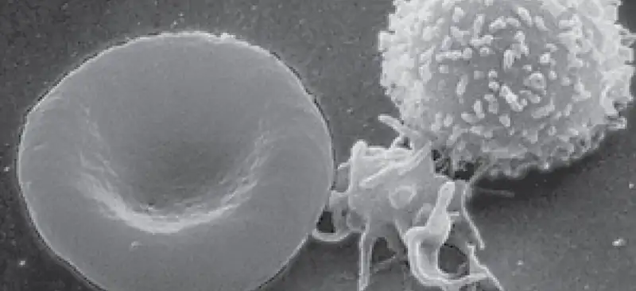
Chapter Outline: Chapter Objectives
After studying this chapter, you will be able to:
- Identify the primary functions of blood, its fluid and cellular components, and its physical characteristics
- Identify the most important proteins and other solutes present in blood plasma
- Describe the formation of the formed element components of blood
- Discuss the structure and function of red blood cells and hemoglobin
- Classify and characterize white blood cells
- Describe the structure of platelets and explain the process of hemostasis
- Explain the significance of AB and Rh blood groups in blood transfusions
- Discuss a variety of blood disorders
Single-celled organisms do not need blood. They obtain nutrients directly from and excrete wastes directly into their environment. The human organism cannot do that. Our large, complex bodies need blood to deliver nutrients to and remove wastes from our trillions of cells. The heart pumps blood throughout the body in a network of blood vessels. Together, these three components—blood, heart, and vessels—make up the cardiovascular system. This chapter focuses on the medium of transport: blood.
18.1 An Overview of Blood¶
Learning Objectives
By the end of this section, you will be able to:
- Identify the primary functions of blood in transportation, defense, and maintenance of homeostasis
- Name the fluid component of blood and the three major types of formed elements, and identify their relative proportions in a blood sample
- Discuss the unique physical characteristics of blood
- Identify the composition of blood plasma, including its most important solutes and plasma proteins
Recall that blood is a connective tissue. Like all connective tissues, it is made up of cellular elements and an extracellular matrix. The cellular elements—referred to as the formed elements—include red blood cells (RBCs), white blood cells (WBCs), and cell fragments called platelets. The extracellular matrix, called plasma, makes blood unique among connective tissues because it is fluid. This fluid, which is mostly water, perpetually suspends the formed elements and enables them to circulate throughout the body within the cardiovascular system.
Functions of Blood¶
The primary function of blood is to deliver oxygen and nutrients to and remove wastes from body cells, but that is only the beginning of the story. The specific functions of blood also include defense, distribution of heat, and maintenance of homeostasis.
Transportation¶
Nutrients from the foods you eat are absorbed in the digestive tract. Most of these travel in the bloodstream directly to the liver, where they are processed and released back into the bloodstream for delivery to body cells. Oxygen from the air you breathe diffuses into the blood, which moves from the lungs to the heart, which then pumps it out to the rest of the body. Moreover, endocrine glands scattered throughout the body release their products, called hormones, into the bloodstream, which carries them to distant target cells. Blood also picks up cellular wastes and byproducts, and transports them to various organs for removal. For instance, blood moves carbon dioxide to the lungs for exhalation from the body, and various waste products are transported to the kidneys and liver for excretion from the body in the form of urine or bile.
Defense¶
Many types of WBCs protect the body from external threats, such as disease-causing bacteria that have entered the bloodstream in a wound. Other WBCs seek out and destroy internal threats, such as cells with mutated DNA that could multiply to become cancerous, or body cells infected with viruses.
When damage to the vessels results in bleeding, blood platelets and certain proteins dissolved in the plasma, the fluid portion of the blood, interact to block the ruptured areas of the blood vessels involved. This protects the body from further blood loss.
Maintenance of Homeostasis¶
Recall that body temperature is regulated via a classic negative-feedback loop. If you were exercising on a warm day, your rising core body temperature would trigger several homeostatic mechanisms, including increased transport of blood from your core to your body periphery, which is typically cooler. As blood passes through the vessels of the skin, heat would be dissipated to the environment, and the blood returning to your body core would be cooler. In contrast, on a cold day, blood is diverted away from the skin to maintain a warmer body core. In extreme cases, this may result in frostbite.
Blood also helps to maintain the chemical balance of the body. Proteins and other compounds in blood act as buffers, which thereby help to regulate the pH of body tissues. Blood also helps to regulate the water content of body cells.
Composition of Blood¶
You have probably had blood drawn from a superficial vein in your arm, which was then sent to a lab for analysis. Some of the most common blood tests—for instance, those measuring lipid or glucose levels in plasma—determine which substances are present within blood and in what quantities. Other blood tests check for the composition of the blood itself, including the quantities and types of formed elements.
One such test, called a hematocrit, measures the percentage of RBCs, clinically known as erythrocytes, in a blood sample. It is performed by spinning the blood sample in a specialized centrifuge, a process that causes the heavier elements suspended within the blood sample to separate from the lightweight, liquid plasma (Figure 18.2). Because the heaviest elements in blood are the erythrocytes, these settle at the very bottom of the hematocrit tube. Located above the erythrocytes is a pale, thin layer composed of the remaining formed elements of blood. These are the WBCs, clinically known as leukocytes, and the platelets, cell fragments also called thrombocytes. This layer is referred to as the buffy coat because of its color; it normally constitutes less than 1 percent of a blood sample. Above the buffy coat is the blood plasma, normally a pale, straw-colored fluid, which constitutes the remainder of the sample.
The volume of erythrocytes after centrifugation is also commonly referred to as packed cell volume (PCV). In normal blood, about 45 percent of a sample is erythrocytes. The hematocrit of any one sample can vary significantly, however, about 36–50 percent, according to gender and other factors. Normal hematocrit values for females range from 37 to 47, with a mean value of 41; for males, hematocrit ranges from 42 to 52, with a mean of 47. The percentage of other formed elements, the WBCs and platelets, is extremely small so it is not normally considered with the hematocrit. So the mean plasma percentage is the percent of blood that is not erythrocytes: for females, it is approximately 59 (or 100 minus 41), and for males, it is approximately 53 (or 100 minus 47).
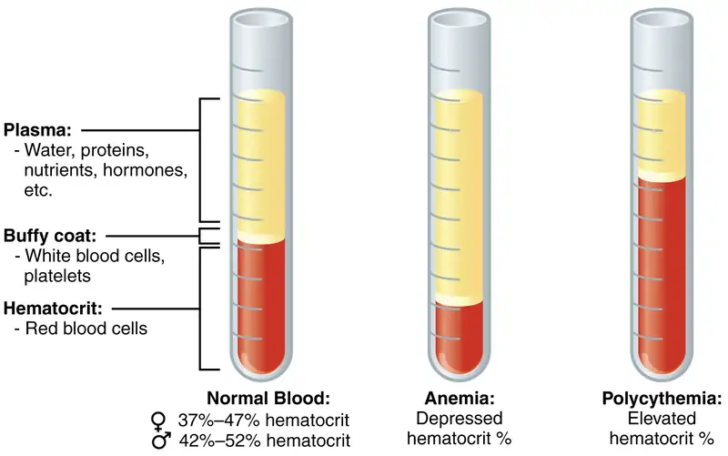
Characteristics of Blood¶
When you think about blood, the first characteristic that probably comes to mind is its color. Blood that has just taken up oxygen in the lungs is bright red, and blood that has released oxygen in the tissues is a more dusky red. This is because hemoglobin is a pigment that changes color, depending upon the degree of oxygen saturation.
Blood is viscous and somewhat sticky to the touch. It has a viscosity approximately five times greater than water. Viscosity is a measure of a fluid’s thickness or resistance to flow, and is influenced by the presence of the plasma proteins and formed elements within the blood. The viscosity of blood has a dramatic impact on blood pressure and flow. Consider the difference in flow between water and honey. The more viscous honey would demonstrate a greater resistance to flow than the less viscous water. The same principle applies to blood.
The normal temperature of blood is slightly higher than normal body temperature—about 38 °C (or 100.4 °F), compared to 37 °C (or 98.6 °F) for an internal body temperature reading, although daily variations of 0.5 °C are normal. Although the surface of blood vessels is relatively smooth, as blood flows through them, it experiences some friction and resistance, especially as vessels age and lose their elasticity, thereby producing heat. This accounts for its slightly higher temperature.
The pH of blood averages about 7.4; however, it can range from 7.35 to 7.45 in a healthy person. Blood is therefore somewhat more basic (alkaline) on a chemical scale than pure water, which has a pH of 7.0. Blood contains numerous buffers that actually help to regulate pH.
Blood constitutes approximately 8 percent of adult body weight. Adult males typically average about 5 to 6 liters of blood. Females average 4–5 liters.
Blood Plasma¶
Like other fluids in the body, plasma is composed primarily of water: In fact, it is about 92 percent water. Dissolved or suspended within this water is a mixture of substances, most of which are proteins. There are literally hundreds of substances dissolved or suspended in the plasma, although many of them are found only in very small quantities.
Interactive
Visit this site for a list of normal levels established for many of the substances found in a sample of blood. Serum, one of the specimen types included, refers to a sample of plasma after clotting factors have been removed. What types of measurements are given for levels of glucose in the blood?
Plasma Proteins¶
About 7 percent of the volume of plasma—nearly all that is not water—is made of proteins. These include several plasma proteins (proteins that are unique to the plasma), plus a much smaller number of regulatory proteins, including enzymes and some hormones. The major components of plasma are summarized in Figure 18.3.
The three major groups of plasma proteins are as follows:
- Albumin is the most abundant of the plasma proteins. Manufactured by the liver, albumin molecules serve as binding proteins—transport vehicles for fatty acids and steroid hormones. Recall that lipids are hydrophobic; however, their binding to albumin enables their transport in the watery plasma. Albumin is also the most significant contributor to the osmotic pressure of blood; that is, its presence holds water inside the blood vessels and draws water from the tissues, across blood vessel walls, and into the bloodstream. This in turn helps to maintain both blood volume and blood pressure. Albumin normally accounts for approximately 54 percent of the total plasma protein content, in clinical levels of 3.5–5.0 g/dL blood.
- The second most common plasma proteins are the globulins. A heterogeneous group, there are three main subgroups known as alpha, beta, and gamma globulins. The alpha and beta globulins transport iron, lipids, and the fat-soluble vitamins A, D, E, and K to the cells; like albumin, they also contribute to osmotic pressure. The gamma globulins are proteins involved in immunity and are better known as antibodies or immunoglobulins. Although other plasma proteins are produced by the liver, immunoglobulins are produced by specialized leukocytes known as plasma cells. (Seek additional content for more information about immunoglobulins.) Globulins make up approximately 38 percent of the total plasma protein volume, in clinical levels of 1.0–1.5 g/dL blood.
- Fibrinogen is the third of the three major groups of plasma proteins. Like albumin and the alpha and beta globulins, fibrinogen is produced by the liver. It is essential for blood clotting, a process described later in this chapter. Fibrinogen accounts for about 7 percent of the total plasma protein volume, in clinical levels of 0.2–0.45 g/dL blood.
Other Plasma Solutes¶
In addition to proteins, plasma contains a wide variety of other substances. These include various electrolytes, such as sodium, potassium, and calcium ions; dissolved gases, such as oxygen, carbon dioxide, and nitrogen; various organic nutrients, such as vitamins, lipids, glucose, and amino acids; and metabolic wastes. All of these nonprotein solutes combined contribute approximately 1 percent to the total volume of plasma.
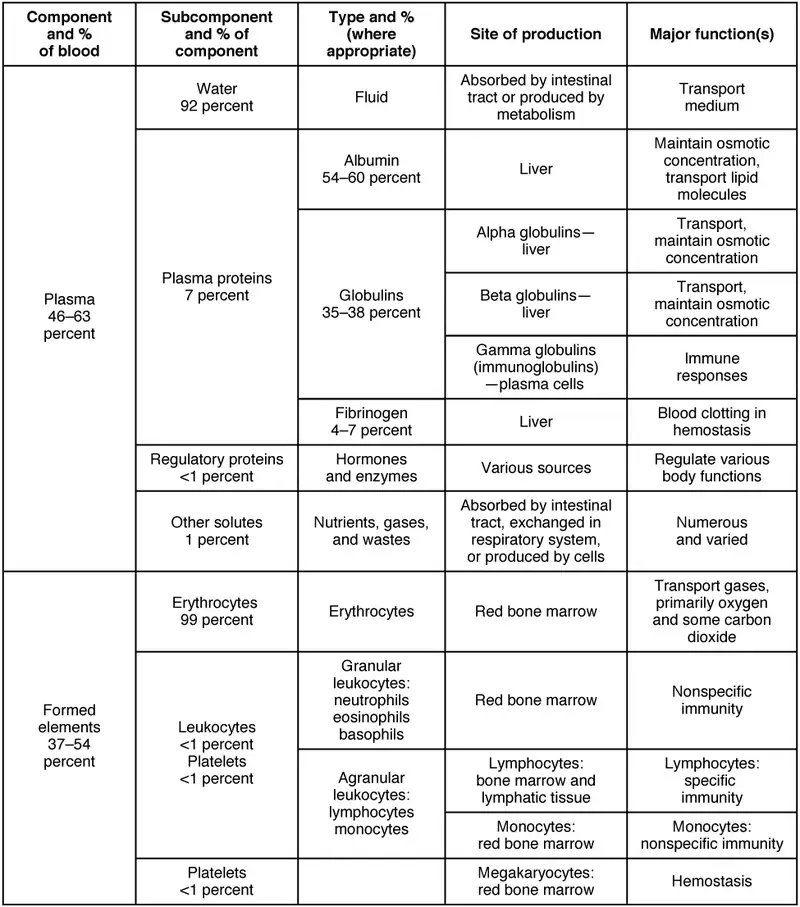
Career Connection: Phlebotomy and Medical Lab Technology
Phlebotomists are professionals trained to draw blood (phleb- = “a blood vessel”; -tomy = “to cut”). When more than a few drops of blood are required, phlebotomists perform a venipuncture, typically of a surface vein in the arm. They perform a capillary stick on a finger, an earlobe, or the heel of an infant when only a small quantity of blood is required. An arterial stick is collected from an artery and used to analyze blood gases. After collection, the blood may be analyzed by medical laboratories or perhaps used for transfusions, donations, or research. While many allied health professionals practice phlebotomy, the American Society of Phlebotomy Technicians issues certificates to individuals passing a national examination, and some large labs and hospitals hire individuals expressly for their skill in phlebotomy.
Medical or clinical laboratories employ a variety of individuals in technical positions:
- Clinical Laboratory Technologists (CLT), also known as Medical Laboratory Scientists (MLS), typically hold a bachelor’s degree and certification from an accredited training program. They perform a wide variety of tests on various body fluids, including blood. The information they provide is essential to the primary care providers in determining a diagnosis and in monitoring the course of a disease and response to treatment.
- Medical laboratory technicians (MLT) typically have an associate’s degree but may perform duties similar to those of an MT.
- Medical laboratory assistants (MLA) spend the majority of their time processing samples and carrying out routine assignments within the lab. Clinical training is required, but a degree may not be essential to obtaining a position.
18.2 Production of the Formed Elements¶
Learning Objectives
By the end of this section, you will be able to:
- Trace the generation of the formed elements of blood from bone marrow stem cells
- Discuss the role of hemopoietic growth factors in promoting the production of the formed elements
The lifespan of the formed elements is very brief. Although one type of leukocyte called memory cells can survive for years, most erythrocytes, leukocytes, and platelets normally live only a few hours to a few weeks. Thus, the body must form new blood cells and platelets quickly and continuously. When you donate a unit of blood during a blood drive (approximately 475 mL, or about 1 pint), your body typically replaces the donated plasma within 24 hours, but it takes about 4 to 6 weeks to replace the blood cells. This restricts the frequency with which donors can contribute their blood. The process by which this replacement occurs is called hemopoiesis, or hematopoiesis (from the Greek root haima- = “blood”; -poiesis = “production”).
Sites of Hemopoiesis¶
Prior to birth, hemopoiesis occurs in a number of tissues, beginning with the yolk sac of the developing embryo, and continuing in the fetal liver, spleen, lymphatic tissue, and eventually the red bone marrow. Following birth, most hemopoiesis occurs in the red marrow, a connective tissue within the spaces of spongy (cancellous) bone tissue. In children, hemopoiesis can occur in the medullary cavity of long bones; in adults, the process is largely restricted to the cranial and pelvic bones, the vertebrae, the sternum, and the proximal epiphyses of the femur and humerus.
Throughout adulthood, the liver and spleen maintain their ability to generate the formed elements. This process is referred to as extramedullary hemopoiesis (meaning hemopoiesis outside the medullary cavity of adult bones). When a disease such as bone cancer destroys the bone marrow, causing hemopoiesis to fail, extramedullary hemopoiesis may be initiated.
Differentiation of Formed Elements from Stem Cells¶
All formed elements arise from stem cells of the red bone marrow. Recall that stem cells undergo mitosis plus cytokinesis (cellular division) to give rise to new daughter cells: One of these remains a stem cell and the other differentiates into one of any number of diverse cell types. Stem cells may be viewed as occupying a hierarchal system, with some loss of the ability to diversify at each step. The totipotent stem cell is the zygote, or fertilized egg. The totipotent (toti- = “all”) stem cell gives rise to all cells of the human body. The next level is the pluripotent stem cell, which gives rise to multiple types of cells of the body and some of the supporting fetal membranes. Beneath this level, the mesenchymal cell is a stem cell that develops only into types of connective tissue, including fibrous connective tissue, bone, cartilage, and blood, but not epithelium, muscle, and nervous tissue. One step lower on the hierarchy of stem cells is the hematopoietic stem cell, or hemocytoblast. All of the formed elements of blood originate from this specific type of cell.
Hemopoiesis begins when the hematopoietic stem cell is exposed to appropriate chemical stimuli collectively called hemopoietic growth factors, which prompt it to divide and differentiate. One daughter cell remains a hematopoietic stem cell, allowing hemopoiesis to continue. The other daughter cell becomes either of two types of more specialized stem cells (Figure 18.4):
- Lymphoid stem cells give rise to a class of leukocytes known as lymphocytes, which include the various T cells, B cells, and natural killer (NK) cells, all of which function in immunity. However, hemopoiesis of lymphocytes progresses somewhat differently from the process for the other formed elements. In brief, lymphoid stem cells quickly migrate from the bone marrow to lymphatic tissues, including the lymph nodes, spleen, and thymus, where their production and differentiation continues. B cells are so named since they mature in the bone marrow, while T cells mature in the thymus.
- Myeloid stem cells give rise to all the other formed elements, including the erythrocytes; megakaryocytes that produce platelets; and a myeloblast lineage that gives rise to monocytes and three forms of granular leukocytes: neutrophils, eosinophils, and basophils.
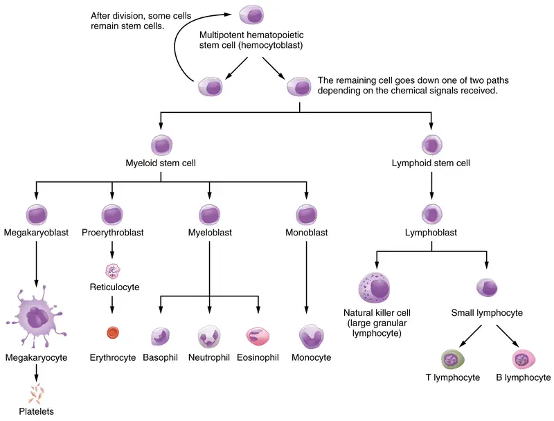
Lymphoid and myeloid stem cells do not immediately divide and differentiate into mature formed elements. As you can see in Figure 18.4, there are several intermediate stages of precursor cells (literally, forerunner cells), many of which can be recognized by their names, which have the suffix -blast. For instance, megakaryoblasts are the precursors of megakaryocytes, and proerythroblasts become reticulocytes, which eject their nucleus and most other organelles before maturing into erythrocytes.
Hemopoietic Growth Factors¶
Development from stem cells to precursor cells to mature cells is again initiated by hemopoietic growth factors. These include the following:
-
Erythropoietin (EPO) is a glycoprotein hormone secreted by the interstitial fibroblast cells of the kidneys in response to low oxygen levels. It prompts the production of erythrocytes. Some athletes use synthetic EPO as a performance-enhancing drug (called blood doping) to increase RBC counts and subsequently increase oxygen delivery to tissues throughout the body. EPO is a banned substance in most organized sports, but it is also used medically in the treatment of certain anemia, specifically those triggered by certain types of cancer, and other disorders in which increased erythrocyte counts and oxygen levels are desirable.
-
Thrombopoietin, another glycoprotein hormone, is produced by the liver and kidneys. It triggers the development of megakaryocytes into platelets.
-
Cytokines are glycoproteins secreted by a wide variety of cells, including red bone marrow, leukocytes, macrophages, fibroblasts, and endothelial cells. They act locally as autocrine or paracrine factors, stimulating the proliferation of progenitor cells and helping to stimulate both nonspecific and specific resistance to disease. There are two major subtypes of cytokines known as colony-stimulating factors and interleukins.
- Colony-stimulating factors (CSFs) are glycoproteins that act locally, as autocrine or paracrine factors. Some trigger the differentiation of myeloblasts into granular leukocytes, namely, neutrophils, eosinophils, and basophils. These are referred to as granulocyte CSFs. A different CSF induces the production of monocytes, called monocyte CSFs. Both granulocytes and monocytes are stimulated by GM-CSF; granulocytes, monocytes, platelets, and erythrocytes are stimulated by multi-CSF. Synthetic forms of these hormones are often administered to patients with various forms of cancer who are receiving chemotherapy to revive their WBC counts.
- Interleukins are another class of cytokine signaling molecules important in hemopoiesis. They were initially thought to be secreted uniquely by leukocytes and to communicate only with other leukocytes, and were named accordingly, but are now known to be produced by a variety of cells including bone marrow and endothelium. Researchers now suspect that interleukins may play other roles in body functioning, including differentiation and maturation of cells, producing immunity and inflammation. To date, more than a dozen interleukins have been identified, with others likely to follow. They are generally numbered IL-1, IL-2, IL-3, etc.
Everyday Connection: Blood Doping
In its original intent, the term blood doping was used to describe the practice of injecting by transfusion supplemental RBCs into an individual, typically to enhance performance in a sport. Additional RBCs would deliver more oxygen to the tissues, providing extra aerobic capacity, clinically referred to as VO2 max. The source of the cells was either from the recipient (autologous) or from a donor with compatible blood (homologous). This practice was aided by the well-developed techniques of harvesting, concentrating, and freezing of the RBCs that could be later thawed and injected, yet still retain their functionality. These practices are considered illegal in virtually all sports and run the risk of infection, significantly increasing the viscosity of the blood and the potential for transmission of blood-borne pathogens if the blood was collected from another individual.
With the development of synthetic EPO in the 1980s, it became possible to provide additional RBCs by artificially stimulating RBC production in the bone marrow. Originally developed to treat patients suffering from anemia, renal failure, or cancer treatment, large quantities of EPO can be generated by recombinant DNA technology. Synthetic EPO is injected under the skin and can increase hematocrit for many weeks. It may also induce polycythemia and raise hematocrit to 70 or greater. This increased viscosity raises the resistance of the blood and forces the heart to pump more powerfully; in extreme cases, it has resulted in death. Other drugs such as cobalt II chloride have been shown to increase natural EPO gene expression. Blood doping has become problematic in many sports, especially cycling. Lance Armstrong, winner of seven Tour de France and many other cycling titles, was stripped of his victories and admitted to blood doping in 2013.
Interactive
Watch this video to see doctors discuss the dangers of blood doping in sports. What are the some potential side effects of blood doping?
Bone Marrow Sampling and Transplants¶
Sometimes, a healthcare provider will order a bone marrow biopsy, a diagnostic test of a sample of red bone marrow, or a bone marrow transplant, a treatment in which a donor’s healthy bone marrow—and its stem cells—replaces the faulty bone marrow of a patient. These tests and procedures are often used to assist in the diagnosis and treatment of various severe forms of anemia, such as thalassemia major and sickle cell anemia, as well as some types of cancer, specifically leukemia.
In the past, when a bone marrow sample or transplant was necessary, the procedure would have required inserting a large-bore needle into the region near the iliac crest of the pelvic bones (os coxae). This location was preferred, since its location close to the body surface makes it more accessible, and it is relatively isolated from most vital organs. Unfortunately, the procedure is quite painful.
Now, direct sampling of bone marrow can often be avoided. In many cases, stem cells can be isolated in just a few hours from a sample of a patient’s blood. The isolated stem cells are then grown in culture using the appropriate hemopoietic growth factors, and analyzed or sometimes frozen for later use.
For an individual requiring a transplant, a matching donor is essential to prevent the immune system from destroying the donor cells—a phenomenon known as tissue rejection. To treat patients with bone marrow transplants, it is first necessary to destroy the patient’s own diseased marrow through radiation and/or chemotherapy. Donor bone marrow stem cells are then intravenously infused. From the bloodstream, they establish themselves in the recipient’s bone marrow.
18.3 Erythrocytes¶
Learning Objectives
By the end of this section, you will be able to:
- Describe the anatomy of erythrocytes
- Discuss the various steps in the lifecycle of an erythrocyte
- Explain the composition and function of hemoglobin
The erythrocyte, commonly known as a red blood cell (or RBC), is by far the most common formed element: A single drop of blood contains millions of erythrocytes and just thousands of leukocytes. Specifically, males have about 5.4 million erythrocytes per microliter (µL) of blood, and females have approximately 4.8 million per µL. In fact, erythrocytes are estimated to make up about 25 percent of the total cells in the body. As you can imagine, they are quite small cells, with a mean diameter of only about 7–8 micrometers (µm) (Figure 18.5). The primary functions of erythrocytes are to pick up inhaled oxygen from the lungs and transport it to the body’s tissues, and to pick up some (about 24 percent) carbon dioxide waste at the tissues and transport it to the lungs for exhalation. Erythrocytes remain within the vascular network. Although leukocytes typically leave the blood vessels to perform their defensive functions, movement of erythrocytes from the blood vessels is abnormal.
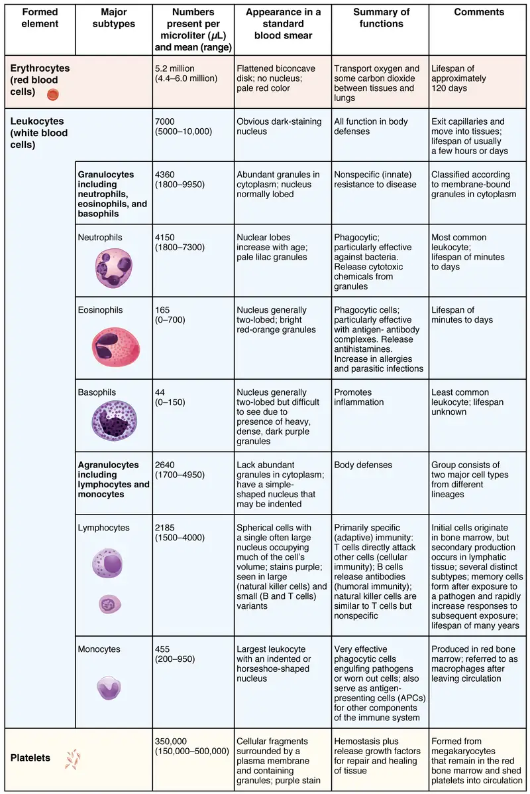
Shape and Structure of Erythrocytes¶
As an erythrocyte matures in the red bone marrow, it extrudes its nucleus and most of its other organelles. During the first day or two that it is in the circulation, an immature erythrocyte, known as a reticulocyte, will still typically contain remnants of organelles. Reticulocytes should comprise approximately 1–2 percent of the erythrocyte count and provide a rough estimate of the rate of RBC production, with abnormally low or high rates indicating deviations in the production of these cells. These remnants, primarily of networks (reticulum) of ribosomes, are quickly shed, however, and mature, circulating erythrocytes have few internal cellular structural components. Lacking mitochondria, for example, they rely on anaerobic respiration. This means that they do not utilize any of the oxygen they are transporting, so they can deliver it all to the tissues. They also lack endoplasmic reticula and do not synthesize proteins. Erythrocytes do, however, contain some structural proteins that help the blood cells maintain their unique structure and enable them to change their shape to squeeze through capillaries. This includes the protein spectrin, a cytoskeletal protein element.
Erythrocytes are biconcave disks; that is, they are plump at their periphery and very thin in the center (Figure 18.6). Since they lack most organelles, there is more interior space for the presence of the hemoglobin molecules that, as you will see shortly, transport gases. The biconcave shape also provides a greater surface area across which gas exchange can occur, relative to its volume; a sphere of a similar diameter would have a lower surface area-to-volume ratio. In the capillaries, the oxygen carried by the erythrocytes can diffuse into the plasma and then through the capillary walls to reach the cells, whereas some of the carbon dioxide produced by the cells as a waste product diffuses into the capillaries to be picked up by the erythrocytes. Capillary beds are extremely narrow, slowing the passage of the erythrocytes and providing an extended opportunity for gas exchange to occur. However, the space within capillaries can be so minute that, despite their own small size, erythrocytes may have to fold in on themselves if they are to make their way through. Fortunately, their structural proteins like spectrin are flexible, allowing them to bend over themselves to a surprising degree, then spring back again when they enter a wider vessel. In wider vessels, erythrocytes may stack up much like a roll of coins, forming a rouleaux, from the French word for “roll.”
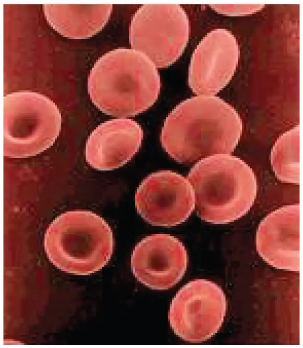
Hemoglobin¶
Hemoglobin is a large molecule made up of proteins and iron. It consists of four folded chains of a protein called globin, designated alpha 1 and 2, and beta 1 and 2 (Figure 18.7a). Each of these globin molecules is bound to a red pigment molecule called heme, which contains an ion of iron (Fe2+) (Figure 18.7b).
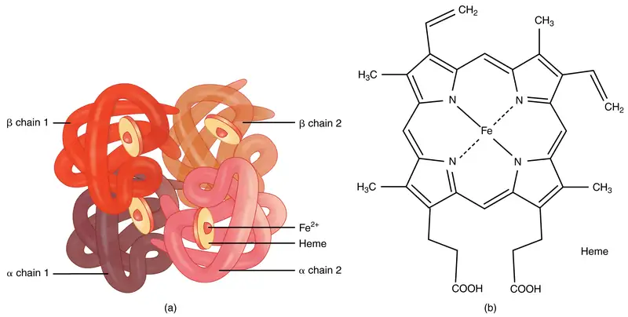
Each iron ion in the heme can bind to one oxygen molecule; therefore, each hemoglobin molecule can transport four oxygen molecules. An individual erythrocyte may contain about 300 million hemoglobin molecules, and therefore can bind to and transport up to 1.2 billion oxygen molecules (see Figure 18.7b).
In the lungs, hemoglobin picks up oxygen, which binds to the iron ions, forming oxyhemoglobin. The bright red, oxygenated hemoglobin travels to the body tissues, where it releases some of the oxygen molecules, becoming darker red deoxyhemoglobin, sometimes referred to as reduced hemoglobin. Oxygen release depends on the need for oxygen in the surrounding tissues, so hemoglobin rarely if ever leaves all of its oxygen behind. In the capillaries, carbon dioxide enters the bloodstream. About 76 percent dissolves in the plasma, some of it remaining as dissolved CO2, and the remainder forming bicarbonate ion. About 23–24 percent of it binds to the amino acids in hemoglobin, forming a molecule known as carbaminohemoglobin. From the capillaries, the hemoglobin carries carbon dioxide back to the lungs, where it releases it for exchange of oxygen.
Changes in the levels of RBCs can have significant effects on the body’s ability to effectively deliver oxygen to the tissues. Ineffective hematopoiesis results in insufficient numbers of RBCs and results in one of several forms of anemia. An overproduction of RBCs produces a condition called polycythemia. The primary drawback with polycythemia is not a failure to directly deliver enough oxygen to the tissues, but rather the increased viscosity of the blood, which makes it more difficult for the heart to circulate the blood.
In patients with insufficient hemoglobin, the tissues may not receive sufficient oxygen, resulting in another form of anemia. In determining oxygenation of tissues, the value of greatest interest in healthcare is the percent saturation; that is, the percentage of hemoglobin sites occupied by oxygen in a patient’s blood. Clinically this value is commonly referred to simply as “percent sat.”
Percent saturation is normally monitored using a device known as a pulse oximeter, which is applied to a thin part of the body, typically the tip of the patient’s finger. The device works by sending two different wavelengths of light (one red, the other infrared) through the finger and measuring the light with a photodetector as it exits. Hemoglobin absorbs light differentially depending upon its saturation with oxygen. The machine calibrates the amount of light received by the photodetector against the amount absorbed by the partially oxygenated hemoglobin and presents the data as percent saturation. Normal pulse oximeter readings range from 95–100 percent. Lower percentages reflect hypoxemia, or low blood oxygen. The term hypoxia is more generic and simply refers to low oxygen levels. Oxygen levels are also directly monitored from free oxygen in the plasma typically following an arterial stick. When this method is applied, the amount of oxygen present is expressed in terms of partial pressure of oxygen or simply PO2 or PO2 and is typically recorded in units of millimeters of mercury, mm Hg.
The kidneys filter about 180 liters (~380 pints) of blood in an average adult each day, or about 20 percent of the total resting volume, and thus serve as ideal sites for receptors that determine oxygen saturation. In response to hypoxemia, less oxygen will exit the vessels supplying the kidney, resulting in hypoxia (low oxygen concentration) in the tissue fluid of the kidney where oxygen concentration is actually monitored. Interstitial fibroblasts within the kidney secrete EPO, thereby increasing erythrocyte production and restoring oxygen levels. In a classic negative-feedback loop, as oxygen saturation rises, EPO secretion falls, and vice versa, thereby maintaining homeostasis. Populations dwelling at high elevations, with inherently lower levels of oxygen in the atmosphere, naturally maintain a hematocrit higher than people living at sea level. Consequently, people traveling to high elevations may experience symptoms of hypoxemia, such as fatigue, headache, and shortness of breath, for a few days after their arrival. In response to the hypoxemia, the kidneys secrete EPO to step up the production of erythrocytes until homeostasis is achieved once again. To avoid the symptoms of hypoxemia, or altitude sickness, mountain climbers typically rest for several days to a week or more at a series of camps situated at increasing elevations to allow EPO levels and, consequently, erythrocyte counts to rise. When climbing the tallest peaks, such as Mt. Everest and K2 in the Himalayas, many mountain climbers rely upon bottled oxygen as they near the summit.
Lifecycle of Erythrocytes¶
Production of erythrocytes in the marrow occurs at the staggering rate of more than 2 million cells per second. For this production to occur, a number of raw materials must be present in adequate amounts. These include the same nutrients that are essential to the production and maintenance of any cell, such as glucose, lipids, and amino acids. However, erythrocyte production also requires several trace elements:
- Iron. We have said that each heme group in a hemoglobin molecule contains an ion of the trace mineral iron. On average, less than 20 percent of the iron we consume is absorbed. Heme iron, from animal foods such as meat, poultry, and fish, is absorbed more efficiently than non-heme iron from plant foods. Upon absorption, iron becomes part of the body’s total iron pool. The bone marrow, liver, and spleen can store iron in the protein compounds ferritin and hemosiderin. Ferroportin transports the iron across the intestinal cell plasma membranes and from its storage sites into tissue fluid where it enters the blood. When EPO stimulates the production of erythrocytes, iron is released from storage, bound to transferrin, and carried to the red marrow where it attaches to erythrocyte precursors.
- Copper. A trace mineral, copper is a component of two plasma proteins, hephaestin and ceruloplasmin. Without these, hemoglobin could not be adequately produced. Located in intestinal villi, hephaestin enables iron to be absorbed by intestinal cells. Ceruloplasmin transports copper. Both enable the oxidation of iron from Fe2+ to Fe3+, a form in which it can be bound to its transport protein, transferrin, for transport to body cells. In a state of copper deficiency, the transport of iron for heme synthesis decreases, and iron can accumulate in tissues, where it can eventually lead to organ damage.
- Zinc. The trace mineral zinc functions as a co-enzyme that facilitates the synthesis of the heme portion of hemoglobin.
- B vitamins. The B vitamins folate and vitamin B12 function as co-enzymes that facilitate DNA synthesis. Thus, both are critical for the synthesis of new cells, including erythrocytes.
Erythrocytes live up to 120 days in the circulation, after which the worn-out cells are removed by a type of myeloid phagocytic cell called a macrophage, located primarily within the bone marrow, liver, and spleen. The components of the degraded erythrocytes’ hemoglobin are further processed as follows:
- Globin, the protein portion of hemoglobin, is broken down into amino acids, which can be sent back to the bone marrow to be used in the production of new erythrocytes. Hemoglobin that is not phagocytized is broken down in the circulation, releasing alpha and beta chains that are removed from circulation by the kidneys.
- The iron contained in the heme portion of hemoglobin may be stored in the liver or spleen, primarily in the form of ferritin or hemosiderin, or carried through the bloodstream by transferrin to the red bone marrow for recycling into new erythrocytes.
- The non-iron portion of heme is degraded into the waste product biliverdin, a green pigment, and then into another waste product, bilirubin, a yellow pigment. Bilirubin binds to albumin and travels in the blood to the liver, which uses it in the manufacture of bile, a compound released into the intestines to help emulsify dietary fats. In the large intestine, bacteria breaks the bilirubin apart from the bile and converts it to urobilinogen and then into stercobilin. It is then eliminated from the body in the feces. Broad-spectrum antibiotics typically eliminate these bacteria as well and may alter the color of feces. The kidneys also remove any circulating bilirubin and other related metabolic byproducts such as urobilins and secrete them into the urine.
The breakdown pigments formed from the destruction of hemoglobin can be seen in a variety of situations. At the site of an injury, biliverdin from damaged RBCs produces some of the dramatic colors associated with a bruise. With a failing liver, bilirubin cannot be removed effectively from circulation and causes the body to assume a yellowish tinge associated with jaundice. Stercobilins within the feces produce the typical brown color associated with this waste. And the yellow of urine is associated with the urobilins.
The erythrocyte lifecycle is summarized in Figure 18.8.
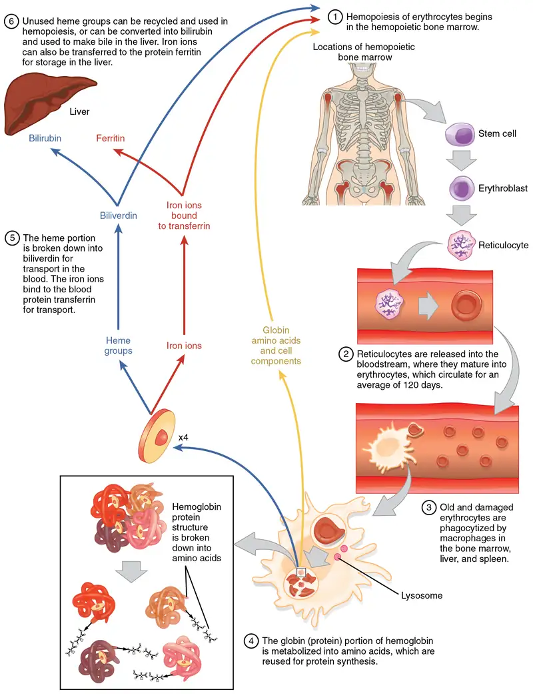
Disorders of Erythrocytes¶
The size, shape, and number of erythrocytes, and the number of hemoglobin molecules can have a major impact on a person’s health. When the number of RBCs or hemoglobin is deficient, the general condition is called anemia. There are more than 400 types of anemia and more than 3.5 million Americans suffer from this condition. Anemia can be broken down into three major groups: those caused by blood loss, those caused by faulty or decreased RBC production, and those caused by excessive destruction of RBCs. Clinicians often use two groupings in diagnosis: The kinetic approach focuses on evaluating the production, destruction, and removal of RBCs, whereas the morphological approach examines the RBCs themselves, paying particular emphasis to their size. A common test is the mean corpuscle volume (MCV), which measures size. Normal-sized cells are referred to as normocytic, smaller-than-normal cells are referred to as microcytic, and larger-than-normal cells are referred to as macrocytic. Reticulocyte counts are also important and may reveal inadequate production of RBCs. The effects of the various anemias are widespread, because reduced numbers of RBCs or hemoglobin will result in lower levels of oxygen being delivered to body tissues. Since oxygen is required for tissue functioning, anemia produces fatigue, lethargy, and an increased risk for infection. An oxygen deficit in the brain impairs the ability to think clearly, and may prompt headaches and irritability. Lack of oxygen leaves the patient short of breath, even as the heart and lungs work harder in response to the deficit.
Blood loss anemias are fairly straightforward. In addition to bleeding from wounds or other lesions, these forms of anemia may be due to ulcers, hemorrhoids, inflammation of the stomach (gastritis), and some cancers of the gastrointestinal tract. The excessive use of aspirin or other nonsteroidal anti-inflammatory drugs such as ibuprofen can trigger ulceration and gastritis. Excessive menstruation and loss of blood during childbirth are also potential causes.
Anemias caused by faulty or decreased RBC production include sickle cell anemia, iron deficiency anemia, vitamin deficiency anemia, and diseases of the bone marrow and stem cells.
- A characteristic change in the shape of erythrocytes is seen in sickle cell disease (also referred to as sickle cell anemia). A genetic disorder, it is caused by production of an abnormal type of hemoglobin, called hemoglobin S, which delivers less oxygen to tissues and causes erythrocytes to assume a sickle (or crescent) shape, especially at low oxygen concentrations (Figure 18.9). These abnormally shaped cells can then become lodged in narrow capillaries because they are unable to fold in on themselves to squeeze through, blocking blood flow to tissues and causing a variety of serious problems from painful joints to delayed growth and even blindness and cerebrovascular accidents (strokes). Sickle cell anemia is a genetic condition particularly found in individuals of African descent.
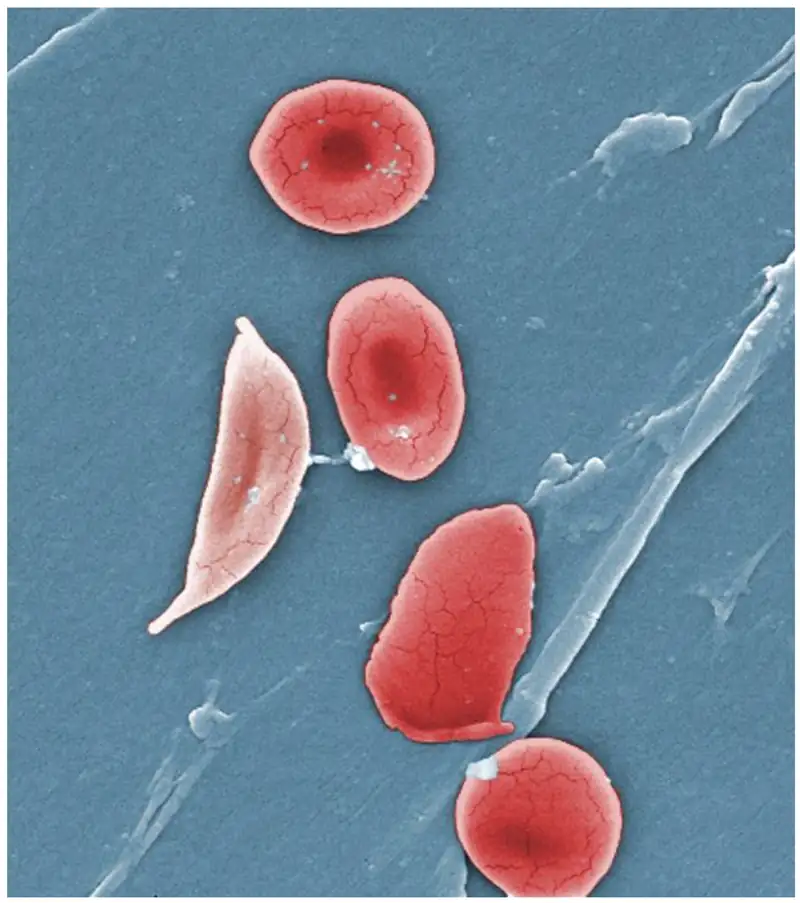
-
Iron deficiency anemia is the most common type and results when the amount of available iron is insufficient to allow production of sufficient heme. This condition can occur in individuals with a deficiency of iron in the diet and is especially common in teens and children as well as in vegans and vegetarians. Additionally, iron deficiency anemia may be caused by either an inability to absorb and transport iron or slow, chronic bleeding.
-
Vitamin-deficient anemias generally involve insufficient vitamin B12 and folate.
- Megaloblastic anemia involves a deficiency of vitamin B12 and/or folate, and often involves diets deficient in these essential nutrients. Lack of meat or a viable alternate source, and overcooking or eating insufficient amounts of vegetables may lead to a lack of folate.
- Pernicious anemia is caused by poor absorption of vitamin B12 and is often seen in patients with Crohn’s disease (a severe intestinal disorder often treated by surgery), surgical removal of the intestines or stomach (common in some weight loss surgeries), intestinal parasites, and AIDS.
- Pregnancies, some medications, excessive alcohol consumption, and some diseases such as celiac disease are also associated with vitamin deficiencies. It is essential to provide sufficient folic acid during the early stages of pregnancy to reduce the risk of neurological defects, including spina bifida, a failure of the neural tube to close.
-
Assorted disease processes can also interfere with the production and formation of RBCs and hemoglobin. If myeloid stem cells are defective or replaced by cancer cells, there will be insufficient quantities of RBCs produced.
- Aplastic anemia is the condition in which there are deficient numbers of RBC stem cells. Aplastic anemia is often inherited, or it may be triggered by radiation, medication, chemotherapy, or infection.
- Thalassemia is an inherited condition typically occurring in individuals from the Middle East, the Mediterranean, African, and Southeast Asia, in which maturation of the RBCs does not proceed normally. The most severe form is called Cooley’s anemia.
- Lead exposure from industrial sources or even dust from paint chips of iron-containing paints or pottery that has not been properly glazed may also lead to destruction of the red marrow.
-
Various disease processes also can lead to anemias. These include chronic kidney diseases often associated with a decreased production of EPO, hypothyroidism, some forms of cancer, lupus, and rheumatoid arthritis.
In contrast to anemia, an elevated RBC count is called polycythemia and is detected in a patient’s elevated hematocrit. It can occur transiently in a person who is dehydrated; when water intake is inadequate or water losses are excessive, the plasma volume falls. As a result, the hematocrit rises. For reasons mentioned earlier, a mild form of polycythemia is chronic but normal in people living at high altitudes. Some elite athletes train at high elevations specifically to induce this phenomenon. Finally, a type of bone marrow disease called polycythemia vera (from the Greek vera = “true”) causes an excessive production of immature erythrocytes. Polycythemia vera can dangerously elevate the viscosity of blood, raising blood pressure and making it more difficult for the heart to pump blood throughout the body. It is a relatively rare disease that occurs more often in males than in females, and is more likely to be present in elderly patients those over 60 years of age.
18.4 Leukocytes and Platelets¶
Learning Objectives
By the end of this section, you will be able to:
- Describe the general characteristics of leukocytes
- Classify leukocytes according to their lineage, their main structural features, and their primary functions
- Discuss the most common malignancies involving leukocytes
- Identify the lineage, basic structure, and function of platelets
The leukocyte, commonly known as a white blood cell (or WBC), is a major component of the body’s defenses against disease. Leukocytes protect the body against invading microorganisms and body cells with mutated DNA, and they clean up debris. Platelets are essential for the repair of blood vessels when damage to them has occurred; they also provide growth factors for healing and repair. See Figure 18.5 for a summary of leukocytes and platelets.
Characteristics of Leukocytes¶
Although leukocytes and erythrocytes both originate from hematopoietic stem cells in the bone marrow, they are very different from each other in many significant ways. For instance, leukocytes are far less numerous than erythrocytes: Typically there are only 5000 to 10,000 per µL. They are also larger than erythrocytes and are the only formed elements that are complete cells, possessing a nucleus and organelles. And although there is just one type of erythrocyte, there are many types of leukocytes. Most of these types have a much shorter lifespan than that of erythrocytes, some as short as a few hours or even a few minutes in the case of acute infection.
One of the most distinctive characteristics of leukocytes is their movement. Whereas erythrocytes spend their days circulating within the blood vessels, leukocytes routinely leave the bloodstream to perform their defensive functions in the body’s tissues. For leukocytes, the vascular network is simply a highway they travel and soon exit to reach their true destination. When they arrive, they are often given distinct names, such as macrophage or microglia, depending on their function. As shown in Figure 18.10, they leave the capillaries—the smallest blood vessels—or other small vessels through a process known as emigration (from the Latin for “removal”) or diapedesis (dia- = “through”; -pedan = “to leap”) in which they squeeze through adjacent cells in a blood vessel wall.
Once they have exited the capillaries, some leukocytes will take up fixed positions in lymphatic tissue, bone marrow, the spleen, the thymus, or other organs. Others will move about through the tissue spaces very much like amoebas, continuously extending their plasma membranes, sometimes wandering freely, and sometimes moving toward the direction in which they are drawn by chemical signals. This attracting of leukocytes occurs because of positive chemotaxis (literally “movement in response to chemicals”), a phenomenon in which injured or infected cells and nearby leukocytes emit the equivalent of a chemical “911” call, attracting more leukocytes to the site. In clinical medicine, the differential counts of the types and percentages of leukocytes present are often key indicators in making a diagnosis and selecting a treatment.
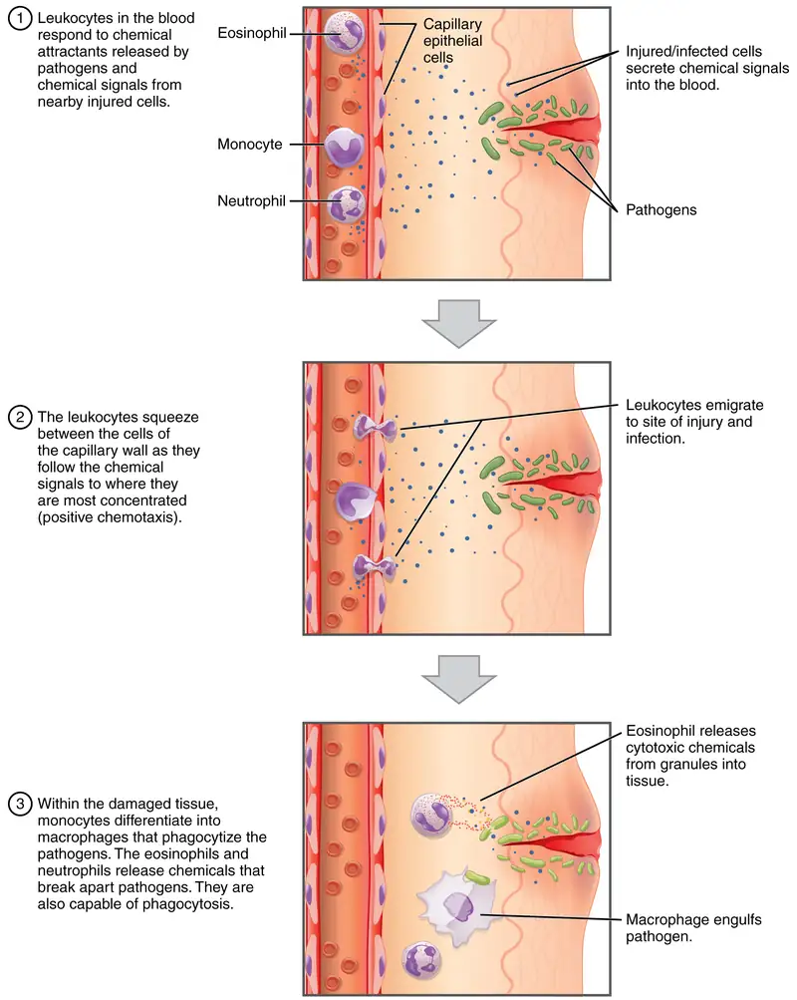
Classification of Leukocytes¶
When scientists first began to observe stained blood slides, it quickly became evident that leukocytes could be divided into two groups, according to whether their cytoplasm contained highly visible granules:
- Granular leukocytes contain abundant granules within the cytoplasm. They include neutrophils, eosinophils, and basophils (you can view their lineage from myeloid stem cells in Figure 18.4).
- While granules are not totally lacking in agranular leukocytes, they are far fewer and less obvious. Agranular leukocytes include monocytes, which mature into macrophages that are phagocytic, and lymphocytes, which arise from the lymphoid stem cell line.
Granular Leukocytes¶
We will consider the granular leukocytes in order from most common to least common. All of these are produced in the red bone marrow and have a short lifespan of hours to days. They typically have a lobed nucleus and are classified according to which type of stain best highlights their granules (Figure 18.11).
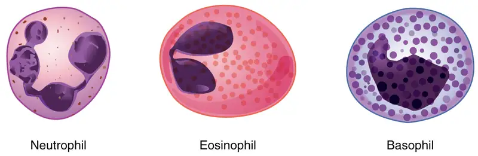
The most common of all the leukocytes, neutrophils will normally comprise 50–70 percent of total leukocyte count. They are 10–12 µm in diameter, significantly larger than erythrocytes. They are called neutrophils because their granules show up most clearly with stains that are chemically neutral (neither acidic nor basic). The granules are numerous but quite fine and normally appear light lilac. The nucleus has a distinct lobed appearance and may have two to five lobes, the number increasing with the age of the cell. Older neutrophils have increasing numbers of lobes and are often referred to as polymorphonuclear (a nucleus with many forms), or simply “polys.” Younger and immature neutrophils begin to develop lobes and are known as “bands.”
Neutrophils are rapid responders to the site of infection and are efficient phagocytes with a preference for bacteria. Their granules include lysozyme, an enzyme capable of lysing, or breaking down, bacterial cell walls; oxidants such as hydrogen peroxide; and defensins, proteins that bind to and puncture bacterial and fungal plasma membranes, so that the cell contents leak out. Abnormally high counts of neutrophils indicate infection and/or inflammation, particularly triggered by bacteria, but are also found in burn patients and others experiencing unusual stress. A burn injury increases the proliferation of neutrophils in order to fight off infection that can result from the destruction of the barrier of the skin. Low counts may be caused by drug toxicity and other disorders, and may increase an individual’s susceptibility to infection.
Eosinophils typically represent 2–4 percent of total leukocyte count. They are also 10–12 µm in diameter. The granules of eosinophils stain best with an acidic stain known as eosin. The nucleus of the eosinophil will typically have two to three lobes and, if stained properly, the granules will have a distinct red to orange color.
The granules of eosinophils include antihistamine molecules, which counteract the activities of histamines, inflammatory chemicals produced by basophils and mast cells. Some eosinophil granules contain molecules toxic to parasitic worms, which can enter the body through the integument, or when an individual consumes raw or undercooked fish or meat. Eosinophils are also capable of phagocytosis and are particularly effective when antibodies bind to the target and form an antigen-antibody complex. High counts of eosinophils are typical of patients experiencing allergies, parasitic worm infestations, and some autoimmune diseases. Low counts may be due to drug toxicity and stress.
Basophils are the least common leukocytes, typically comprising less than one percent of the total leukocyte count. They are slightly smaller than neutrophils and eosinophils at 8–10 µm in diameter. The granules of basophils stain best with basic (alkaline) stains. Basophils contain large granules that pick up a dark blue stain and are so common they may make it difficult to see the two-lobed nucleus.
In general, basophils intensify the inflammatory response. They share this trait with mast cells. In the past, mast cells were considered to be basophils that left the circulation. However, this appears not to be the case, as the two cell types develop from different lineages.
The granules of basophils release histamines, which contribute to inflammation, and heparin, which opposes blood clotting. High counts of basophils are associated with allergies, parasitic infections, and hypothyroidism. Low counts are associated with pregnancy, stress, and hyperthyroidism.
Agranular Leukocytes¶
Agranular leukocytes contain smaller, less-visible granules in their cytoplasm than do granular leukocytes. The nucleus is simple in shape, sometimes with an indentation but without distinct lobes. There are two major types of agranulocytes: lymphocytes and monocytes (see Figure 18.4).
Lymphocytes are the only formed element of blood that arises from lymphoid stem cells. Although they form initially in the bone marrow, much of their subsequent development and reproduction occurs in the lymphatic tissues. Lymphocytes are the second most common type of leukocyte, accounting for about 20–30 percent of all leukocytes, and are essential for the immune response. The size range of lymphocytes is quite extensive, with some authorities recognizing two size classes and others three. Typically, the large cells are 10–14 µm and have a smaller nucleus-to-cytoplasm ratio and more granules. The smaller cells are typically 6–9 µm with a larger volume of nucleus to cytoplasm, creating a “halo” effect. A few cells may fall outside these ranges, at 14–17 µm. This finding has led to the three size range classification.
The three major groups of lymphocytes include natural killer cells, B cells, and T cells. Natural killer (NK) cells are capable of recognizing cells that do not express “self” proteins on their plasma membrane or that contain foreign or abnormal markers. These “nonself” cells include cancer cells, cells infected with a virus, and other cells with atypical surface proteins. Thus, they provide generalized, nonspecific immunity. The larger lymphocytes are typically NK cells.
B cells and T cells, also called B lymphocytes and T lymphocytes, play prominent roles in defending the body against specific pathogens (disease-causing microorganisms) and are involved in specific immunity. One form of B cells (plasma cells) produces the antibodies or immunoglobulins that bind to specific foreign or abnormal components of plasma membranes. This is also referred to as humoral (body fluid) immunity. T cells provide cellular-level immunity by physically attacking foreign or diseased cells. A memory cell is a variety of both B and T cells that forms after exposure to a pathogen and mounts rapid responses upon subsequent exposures. Unlike other leukocytes, memory cells live for many years. B cells undergo a maturation process in the bone marrow, whereas T cells undergo maturation in the thymus. This site of the maturation process gives rise to the name B and T cells. The functions of lymphocytes are complex and will be covered in detail in the chapter covering the lymphatic system and immunity. Smaller lymphocytes are either B or T cells, although they cannot be differentiated in a normal blood smear.
Abnormally high lymphocyte counts are characteristic of viral infections as well as some types of cancer. Abnormally low lymphocyte counts are characteristic of prolonged (chronic) illness or immunosuppression, including that caused by HIV infection and drug therapies that often involve steroids.
Monocytes originate from myeloid stem cells. They normally represent 2–8 percent of the total leukocyte count. They are typically easily recognized by their large size of 12–20 µm and indented or horseshoe-shaped nuclei. Macrophages are monocytes that have left the circulation and phagocytize debris, foreign pathogens, worn-out erythrocytes, and many other dead, worn out, or damaged cells. Macrophages also release antimicrobial defensins and chemotactic chemicals that attract other leukocytes to the site of an infection. Some macrophages occupy fixed locations, whereas others wander through the tissue fluid.
Abnormally high counts of monocytes are associated with viral or fungal infections, tuberculosis, and some forms of leukemia and other chronic diseases. Abnormally low counts are typically caused by suppression of the bone marrow.
Lifecycle of Leukocytes¶
Most leukocytes have a relatively short lifespan, typically measured in hours or days. Production of all leukocytes begins in the bone marrow under the influence of CSFs and interleukins. Secondary production and maturation of lymphocytes occurs in specific regions of lymphatic tissue known as germinal centers. Lymphocytes are fully capable of mitosis and may produce clones of cells with identical properties. This capacity enables an individual to maintain immunity throughout life to many threats that have been encountered in the past.
Disorders of Leukocytes¶
Leukopenia is a condition in which too few leukocytes are produced. If this condition is pronounced, the individual may be unable to ward off disease. Excessive leukocyte proliferation is known as leukocytosis. Although leukocyte counts are high, the cells themselves are often nonfunctional, leaving the individual at increased risk for disease.
Leukemia is a cancer involving an abundance of leukocytes. It may involve only one specific type of leukocyte from either the myeloid line (myelocytic leukemia) or the lymphoid line (lymphocytic leukemia). In chronic leukemia, mature leukocytes accumulate and fail to die. In acute leukemia, there is an overproduction of young, immature leukocytes. In both conditions the cells do not function properly.
Lymphoma is a form of cancer in which masses of malignant T and/or B lymphocytes collect in lymph nodes, the spleen, the liver, and other tissues. As in leukemia, the malignant leukocytes do not function properly, and the patient is vulnerable to infection. Some forms of lymphoma tend to progress slowly and respond well to treatment. Others tend to progress quickly and require aggressive treatment, without which they are rapidly fatal.
Platelets¶
You may occasionally see platelets referred to as thrombocytes, but because this name suggests they are a type of cell, it is not accurate. A platelet is not a cell but rather a fragment of the cytoplasm of a cell called a megakaryocyte that is surrounded by a plasma membrane. Megakaryocytes are descended from myeloid stem cells (see Figure 18.4) and are large, typically 50–100 µm in diameter, and contain an enlarged, lobed nucleus. As noted earlier, thrombopoietin, a glycoprotein secreted by the kidneys and liver, stimulates the proliferation of megakaryoblasts, which mature into megakaryocytes. These remain within bone marrow tissue (Figure 18.12) and ultimately form platelet-precursor extensions that extend through the walls of bone marrow capillaries to release into the circulation thousands of cytoplasmic fragments, each enclosed by a bit of plasma membrane. These enclosed fragments are platelets. Each megakaryocyte releases 2000–3000 platelets during its lifespan. Following platelet release, megakaryocyte remnants, which are little more than a cell nucleus, are consumed by macrophages.
Platelets are relatively small, 2–4 µm in diameter, but numerous, with typically 150,000–160,000 per µL of blood. After entering the circulation, approximately one-third migrate to the spleen for storage for later release in response to any rupture in a blood vessel. They then become activated to perform their primary function, which is to limit blood loss. Platelets remain only about 10 days, then are phagocytized by macrophages.
Platelets are critical to hemostasis, the stoppage of blood loss following damage to a vessel. They also secrete a variety of growth factors essential for growth and repair of tissue, particularly connective tissue. Infusions of concentrated platelets are now being used in some therapies to stimulate healing.
Disorders of Platelets¶
Thrombocytosis is a condition in which there are too many platelets. This may trigger formation of unwanted blood clots (thrombosis), a potentially fatal disorder. If there is an insufficient number of platelets, called thrombocytopenia, blood may not clot properly, and excessive bleeding may result.
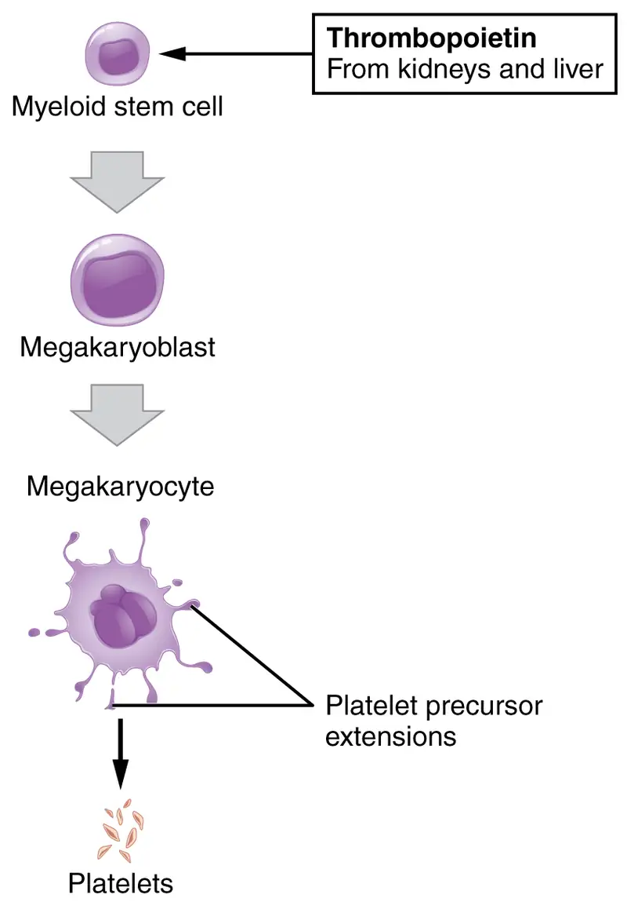
Interactive
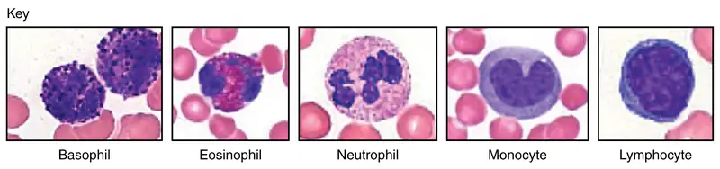
View University of Michigan Webscopes and explore the blood slides in greater detail. The Webscope feature allows you to move the slides as you would with a mechanical stage. You can increase and decrease the magnification. There is a chance to review each of the leukocytes individually after you have attempted to identify them from the first two blood smears. In addition, there are a few multiple choice questions.
Are you able to recognize and identify the various formed elements? You will need to do this is a systematic manner, scanning along the image. The standard method is to use a grid, but this is not possible with this resource. Try constructing a simple table with each leukocyte type and then making a mark for each cell type you identify. Attempt to classify at least 50 and perhaps as many as 100 different cells. Based on the percentage of cells that you count, do the numbers represent a normal blood smear or does something appear to be abnormal?
18.5 Hemostasis¶
Learning Objectives
By the end of this section, you will be able to:
- Describe the three mechanisms involved in hemostasis
- Explain how the extrinsic and intrinsic coagulation pathways lead to the common pathway, and the coagulation factors involved in each
- Discuss disorders affecting hemostasis
Platelets are key players in hemostasis, the process by which the body seals a ruptured blood vessel and prevents further loss of blood. Although rupture of larger vessels usually requires medical intervention, hemostasis is quite effective in dealing with small, simple wounds. There are three steps to the process: vascular spasm, the formation of a platelet plug, and coagulation (blood clotting). Failure of any of these steps will result in hemorrhage—excessive bleeding.
Vascular Spasm¶
When a vessel is severed or punctured, or when the wall of a vessel is damaged, vascular spasm occurs. In vascular spasm, the smooth muscle in the walls of the vessel contracts dramatically. This smooth muscle has both circular layers; larger vessels also have longitudinal layers. The circular layers tend to constrict the flow of blood, whereas the longitudinal layers, when present, draw the vessel back into the surrounding tissue, often making it more difficult for a surgeon to locate, clamp, and tie off a severed vessel. The vascular spasm response is believed to be triggered by several chemicals called endothelins that are released by vessel-lining cells and by pain receptors in response to vessel injury. This phenomenon typically lasts for up to 30 minutes, although it can last for hours.
Formation of the Platelet Plug¶
In the second step, platelets, which normally float free in the plasma, encounter the area of vessel rupture with the exposed underlying connective tissue and collagenous fibers. The platelets begin to clump together, become spiked and sticky, and bind to the exposed collagen and endothelial lining. This process is assisted by a glycoprotein in the blood plasma called von Willebrand factor, which helps stabilize the growing platelet plug. As platelets collect, they simultaneously release chemicals from their granules into the plasma that further contribute to hemostasis. Among the substances released by the platelets are:
- adenosine diphosphate (ADP), which helps additional platelets to adhere to the injury site, reinforcing and expanding the platelet plug
- serotonin, which maintains vasoconstriction
- prostaglandins and phospholipids, which also maintain vasoconstriction and help to activate further clotting chemicals, as discussed next
A platelet plug can temporarily seal a small opening in a blood vessel. Plug formation, in essence, buys the body time while more sophisticated and durable repairs are being made. In a similar manner, even modern naval warships still carry an assortment of wooden plugs to temporarily repair small breaches in their hulls until permanent repairs can be made.
Coagulation¶
Those more sophisticated and more durable repairs are collectively called coagulation, the formation of a blood clot. The process is sometimes characterized as a cascade, because one event prompts the next as in a multi-level waterfall. The result is the production of a gelatinous but robust clot made up of a mesh of fibrin—an insoluble filamentous protein derived from fibrinogen, the plasma protein introduced earlier—in which platelets and blood cells are trapped. Figure 18.14 summarizes the three steps of hemostasis.
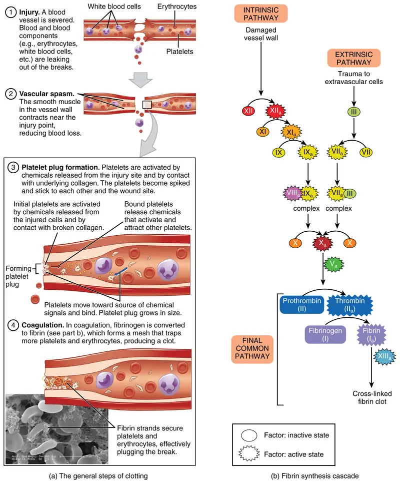
Clotting Factors Involved in Coagulation¶
In the coagulation cascade, chemicals called clotting factors (or coagulation factors) prompt reactions that activate still more coagulation factors. The process is complex, but is initiated along two basic pathways:
- The extrinsic pathway, which normally is triggered by trauma.
- The intrinsic pathway, which begins in the bloodstream and is triggered by internal damage to the wall of the vessel.
Both of these merge into a third pathway, referred to as the common pathway (see Figure 18.14b). All three pathways are dependent upon the 12 known clotting factors, including Ca2+ and vitamin K (Table 18.1). Clotting factors are secreted primarily by the liver and the platelets. The liver requires the fat-soluble vitamin K to produce many of them. Vitamin K (along with biotin and folate) is somewhat unusual among vitamins in that it is not only consumed in the diet but is also synthesized by bacteria residing in the large intestine. The calcium ion, considered factor IV, is derived from the diet and from the breakdown of bone. Some recent evidence indicates that activation of various clotting factors occurs on specific receptor sites on the surfaces of platelets.
The 12 clotting factors are numbered I through XIII according to the order of their discovery. Factor VI was once believed to be a distinct clotting factor, but is now thought to be identical to factor V. Rather than renumber the other factors, factor VI was allowed to remain as a placeholder and also a reminder that knowledge changes over time.
Table 18.1 *Vitamin K required.
| Clotting Factors | ||||
|---|---|---|---|---|
| Factor number | Name | Type of molecule | Source | Pathway(s) |
| I | Fibrinogen | Plasma protein | Liver | Common; converted into fibrin |
| II | Prothrombin | Plasma protein | Liver* | Common; converted into thrombin |
| III | Tissue thromboplastin or tissue factor | Lipoprotein mixture | Damaged cells and platelets | Extrinsic |
| IV | Calcium ions | Inorganic ions in plasma | Diet, platelets, bone matrix | Entire process |
| V | Proaccelerin | Plasma protein | Liver, platelets | Extrinsic and intrinsic |
| VI | Not used | Not used | Not used | Not used |
| VII | Proconvertin | Plasma protein | Liver * | Extrinsic |
| VIII | Antihemolytic factor A | Plasma protein factor | Platelets and endothelial cells | Intrinsic; deficiency results in hemophilia A |
| IX | Antihemolytic factor B (plasma thromboplastin component) | Plasma protein | Liver* | Intrinsic; deficiency results in hemophilia B |
| X | Stuart–Prower factor (thrombokinase) | Protein | Liver* | Extrinsic and intrinsic |
| XI | Antihemolytic factor C (plasma thromboplastin antecedent) | Plasma protein | Liver | Intrinsic; deficiency results in hemophilia C |
| XII | Hageman factor | Plasma protein | Liver | Intrinsic; initiates clotting in vitro also activates plasmin |
| XIII | Fibrin-stabilizing factor | Plasma protein | Liver, platelets | Stabilizes fibrin; slows fibrinolysis |
Extrinsic Pathway¶
The quicker responding and more direct extrinsic pathway (also known as the tissue factor pathway) begins when damage occurs to the surrounding tissues, such as in a traumatic injury. Upon contact with blood plasma, the damaged extravascular cells, which are extrinsic to the bloodstream, release factor III (thromboplastin). Sequentially, Ca2+ then factor VII (proconvertin), which is activated by factor III, are added, forming an enzyme complex. This enzyme complex leads to activation of factor X (Stuart–Prower factor), which activates the common pathway discussed below. The events in the extrinsic pathway are completed in a matter of seconds.
Intrinsic Pathway¶
The intrinsic pathway (also known as the contact activation pathway) is longer and more complex. In this case, the factors involved are intrinsic to (present within) the bloodstream. The pathway can be prompted by damage to the tissues, resulting from internal factors such as arterial disease; however, it is most often initiated when factor XII (Hageman factor) comes into contact with foreign materials, such as when a blood sample is put into a glass test tube. Within the body, factor XII is typically activated when it encounters negatively charged molecules, such as inorganic polymers and phosphate produced earlier in the series of intrinsic pathway reactions. Factor XII sets off a series of reactions that in turn activates factor XI (antihemolytic factor C or plasma thromboplastin antecedent) then factor IX (antihemolytic factor B or plasma thromboplasmin). In the meantime, chemicals released by the platelets increase the rate of these activation reactions. Finally, factor VIII (antihemolytic factor A) from the platelets and endothelial cells combines with factor IX (antihemolytic factor B or plasma thromboplasmin) to form an enzyme complex that activates factor X (Stuart–Prower factor or thrombokinase), leading to the common pathway. The events in the intrinsic pathway are completed in a few minutes.
Common Pathway¶
Both the intrinsic and extrinsic pathways lead to the common pathway, in which fibrin is produced to seal off the vessel. Once factor X has been activated by either the intrinsic or extrinsic pathway, the enzyme prothrombinase converts factor II, the inactive enzyme prothrombin, into the active enzyme thrombin. (Note that if the enzyme thrombin were not normally in an inactive form, clots would form spontaneously, a condition not consistent with life.) Then, thrombin converts factor I, the soluble fibrinogen, into the insoluble fibrin protein strands. Factor XIII then stabilizes the fibrin clot.
Fibrinolysis¶
The stabilized clot is acted upon by contractile proteins within the platelets. As these proteins contract, they pull on the fibrin threads, bringing the edges of the clot more tightly together, somewhat as we do when tightening loose shoelaces (see Figure 18.14a). This process also wrings out of the clot a small amount of fluid called serum, which is blood plasma without its clotting factors.
To restore normal blood flow as the vessel heals, the clot must eventually be removed. Fibrinolysis is the gradual degradation of the clot. Again, there is a fairly complicated series of reactions that involves factor XII and protein-catabolizing enzymes. During this process, the inactive protein plasminogen is converted into the active plasmin, which gradually breaks down the fibrin of the clot. Additionally, bradykinin, a vasodilator, is released, reversing the effects of the serotonin and prostaglandins from the platelets. This allows the smooth muscle in the walls of the vessels to relax and helps to restore the circulation.
Plasma Anticoagulants¶
An anticoagulant is any substance that opposes coagulation. Several circulating plasma anticoagulants play a role in limiting the coagulation process to the region of injury and restoring a normal, clot-free condition of blood. For instance, a cluster of proteins collectively referred to as the protein C system inactivates clotting factors involved in the intrinsic pathway. TFPI (tissue factor pathway inhibitor) inhibits the conversion of the inactive factor VII to the active form in the extrinsic pathway. Antithrombin inactivates factor X and opposes the conversion of prothrombin (factor II) to thrombin in the common pathway. And as noted earlier, basophils release heparin, a short-acting anticoagulant that also opposes prothrombin. Heparin is also found on the surfaces of cells lining the blood vessels. A pharmaceutical form of heparin is often administered therapeutically, for example, in surgical patients at risk for blood clots.
Interactive
View these animations to explore the intrinsic, extrinsic, and common pathways that are involved the process of coagulation. The coagulation cascade restores hemostasis by activating coagulation factors in the presence of an injury.
Disorders of Clotting¶
Either an insufficient or an excessive production of platelets can lead to severe disease or death. As discussed earlier, an insufficient number of platelets, called thrombocytopenia, typically results in the inability of blood to form clots. This can lead to excessive bleeding, even from minor wounds.
Another reason for failure of the blood to clot is the inadequate production of functional amounts of one or more clotting factors. This is the case in the genetic disorder hemophilia, which is actually a group of related disorders, the most common of which is hemophilia A, accounting for approximately 80 percent of cases. This disorder results in the inability to synthesize sufficient quantities of factor VIII. Hemophilia B is the second most common form, accounting for approximately 20 percent of cases. In this case, there is a deficiency of factor IX. Both of these defects are linked to the X chromosome and are typically passed from a healthy (carrier) female to their male offspring, since males are XY. Females would need to inherit a defective gene from each parent to manifest the disease, since they are XX. Patients with hemophilia bleed from even minor internal and external wounds, and leak blood into joint spaces after exercise and into urine and stool. Hemophilia C is a rare condition that is triggered by an autosomal (not sex) chromosome that renders factor XI nonfunctional. It is not a true recessive condition, since even individuals with a single copy of the mutant gene show a tendency to bleed. Regular infusions of clotting factors isolated from healthy donors can help prevent bleeding in hemophiliac patients. At some point, genetic therapy will become a viable option.
In contrast to the disorders characterized by coagulation failure is thrombocytosis, also mentioned earlier, a condition characterized by excessive numbers of platelets that increases the risk for excessive clot formation, a condition known as thrombosis. A thrombus (plural = thrombi) is an aggregation of platelets, erythrocytes, and even WBCs typically trapped within a mass of fibrin strands. While the formation of a clot is normal following the hemostatic mechanism just described, thrombi can form within an intact or only slightly damaged blood vessel. In a large vessel, a thrombus will adhere to the vessel wall and decrease the flow of blood, and is referred to as a mural thrombus. In a small vessel, it may actually totally block the flow of blood and is termed an occlusive thrombus. Thrombi are most commonly caused by vessel damage to the endothelial lining, which activates the clotting mechanism. These may include venous stasis, when blood in the veins, particularly in the legs, remains stationary for long periods. This is one of the dangers of long airplane flights in crowded conditions and may lead to deep vein thrombosis. Thrombophilia, also called hypercoagulation, is a condition in which there is a tendency to form thrombosis. This may be familial (genetic) or acquired. Acquired forms include the autoimmune disease lupus, immune reactions to heparin, polycythemia vera, thrombocytosis, sickle cell disease, pregnancy, and even obesity. A thrombus can seriously impede blood flow to or from a region and will cause a local increase in blood pressure. If flow is to be maintained, the heart will need to generate a greater pressure to overcome the resistance.
When a portion of a thrombus breaks free from the vessel wall and enters the circulation, it is referred to as an embolus. An embolus that is carried through the bloodstream can be large enough to block a vessel critical to a major organ. When it becomes trapped, an embolus is called an embolism. In the heart, brain, or lungs, an embolism may accordingly cause a heart attack, a stroke, or a pulmonary embolism. These are medical emergencies.
Among the many known biochemical activities of aspirin is its role as an anticoagulant. Aspirin (acetylsalicylic acid) is very effective at inhibiting the aggregation of platelets. It is routinely administered during a heart attack or stroke to reduce the adverse effects. Physicians sometimes recommend that patients at risk for cardiovascular disease take a low dose of aspirin on a daily basis as a preventive measure. However, aspirin can also lead to serious side effects, including increasing the risk of ulcers. A patient is well advised to consult a physician before beginning any aspirin regimen.
A class of drugs collectively known as thrombolytic agents can help speed up the degradation of an abnormal clot. If a thrombolytic agent is administered to a patient within 3 hours following a thrombotic stroke, the patient’s prognosis improves significantly. However, some strokes are not caused by thrombi, but by hemorrhage. Thus, the cause must be determined before treatment begins. Tissue plasminogen activator is an enzyme that catalyzes the conversion of plasminogen to plasmin, the primary enzyme that breaks down clots. It is released naturally by endothelial cells but is also used in clinical medicine. New research is progressing using compounds isolated from the venom of some species of snakes, particularly vipers and cobras, which may eventually have therapeutic value as thrombolytic agents.
18.6 Blood Typing¶
Learning Objectives
By the end of this section, you will be able to:
- Describe the two basic physiological consequences of transfusion of incompatible blood
- Compare and contrast ABO and Rh blood groups
- Identify which blood groups may be safely transfused into patients with different ABO types
- Discuss the pathophysiology of hemolytic disease of the newborn
Blood transfusions in humans were risky procedures until the discovery of the major human blood groups by Karl Landsteiner, an Austrian biologist and physician, in 1900. Until that point, physicians did not understand that death sometimes followed blood transfusions, when the type of donor blood infused into the patient was incompatible with the patient’s own blood. Blood groups are determined by the presence or absence of specific marker molecules on the plasma membranes of erythrocytes. With their discovery, it became possible for the first time to match patient-donor blood types and prevent transfusion reactions and deaths.
Antigens, Antibodies, and Transfusion Reactions¶
Antigens are substances that may trigger a defensive response from leukocytes of the immune system if the body does not recognize the antigen as belonging to "self." (Seek more content for additional information on immunity.) Here, we will focus on the role of immunity in blood transfusion reactions. With RBCs in particular, you may see the antigens referred to as isoantigens or agglutinogens (surface antigens) and the antibodies referred to as isoantibodies or agglutinins. In this chapter, we will use the more common terms antigens and antibodies.
Antigens are generally large proteins, but may include other classes of organic molecules, including carbohydrates, lipids, and nucleic acids. Following an infusion of incompatible blood, erythrocytes with foreign antigens appear in the bloodstream and trigger an immune response. Proteins called antibodies (immunoglobulins), which are produced by certain B lymphocytes called plasma cells, attach to the antigens on the plasma membranes of the infused erythrocytes and cause them to adhere to one another.
- Because the arms of the Y-shaped antibodies attach randomly to more than one nonself erythrocyte surface, they form clumps of erythrocytes. This process is called agglutination.
- The clumps of erythrocytes block small blood vessels throughout the body, depriving tissues of oxygen and nutrients.
- As the erythrocyte clumps are degraded, in a process called hemolysis, their hemoglobin is released into the bloodstream. This hemoglobin travels to the kidneys, which are responsible for filtration of the blood. However, the load of hemoglobin released can easily overwhelm the kidney’s capacity to clear it, and the patient can quickly develop kidney failure.
More than 50 antigens have been identified on erythrocyte membranes, but the most significant in terms of their potential harm to patients are classified in two groups: the ABO blood group and the Rh blood group.
The ABO Blood Group¶
Although the ABO blood group name consists of three letters, ABO blood typing designates the presence or absence of just two antigens, A and B. Both are glycoproteins. People whose erythrocytes have A antigens on their erythrocyte membrane surfaces are designated blood type A, and those whose erythrocytes have B antigens are blood type B. People can also have both A and B antigens on their erythrocytes, in which case they are blood type AB. People with neither A nor B antigens are designated blood type O. ABO blood types are genetically determined.
The body must be exposed to a foreign antigen before an antibody can be produced. ABO blood group antigens are found in foods and microbes throughout nature. Thus, the human immune system is exposed to A and B antigens at an early age and antibodies are formed naturally. Individuals with type A blood—without any prior exposure to incompatible blood—have naturally-formed antibodies to the B antigen circulating in their blood plasma. These antibodies, referred to as anti-B antibodies, will cause agglutination and hemolysis if they ever encounter erythrocytes with B antigens. Similarly, an individual with type B blood has naturally-formed anti-A antibodies. Individuals with type AB blood, which has both antigens, do not have naturally-formed antibodies to either of these. People with type O blood lack antigens A and B on their erythrocytes, but both anti-A and anti-B antibodies circulate in their blood plasma.
Rh Blood Groups¶
The Rh blood group is classified according to the presence or absence of a second erythrocyte antigen identified as Rh. (It was first discovered in a type of primate known as a rhesus macaque, which is often used in research, because its blood is similar to that of humans.) Although dozens of Rh antigens have been identified, only one, designated D, is clinically important. Those who have the Rh D antigen present on their erythrocytes—about 85 percent of Americans—are described as Rh positive (Rh+) and those who lack it are Rh negative (Rh−). Note that the Rh group is distinct from the ABO group, so any individual, no matter their ABO blood type, may have or lack this Rh antigen. When identifying a patient’s blood type, the Rh group is designated by adding the word positive or negative to the ABO type. For example, A positive (A+) means ABO group A blood with the Rh antigen present, and AB negative (AB−) means ABO group AB blood without the Rh antigen.
Table 18.2 summarizes the distribution of the ABO and Rh blood types within the United States.
Table 18.2
| Summary of ABO and Rh Blood Types within the United States | |||||
|---|---|---|---|---|---|
| Blood Type | Asian | Black non-Hispanic | Hispanic | North American Indian | White non-Hispanic |
| A+ | 27.3 | 24.0 | 28.7 | 31.3 | 33.0 |
| A− | 0.5 | 1.9 | 2.4 | 3.8 | 6.8 |
| B+ | 25.0 | 18.4 | 9.2 | 7.0 | 9.1 |
| B− | 0.4 | 1.3 | 0.7 | 0.9 | 1.8 |
| AB+ | 7.0 | 4.0 | 2.3 | 2.2 | 3.4 |
| AB− | 0.1 | 0.3 | 0.2 | 0.3 | 0.7 |
| O+ | 39.0 | 46.6 | 52.6 | 50.0 | 37.2 |
| O− | 0.7 | 3.6 | 3.9 | 4.7 | 8.0 |
In contrast to the ABO group antibodies, which are preformed, antibodies to the Rh antigen are produced only in Rh− individuals after exposure to the antigen. This process, called sensitization, occurs following a transfusion with Rh-incompatible blood or, more commonly, with the birth of an Rh+ baby to an Rh− person. Problems are rare in a first pregnancy, since the baby’s Rh+ cells rarely cross the placenta (the organ of gas and nutrient exchange between the fetus and the pregnant person). However, during or immediately after birth, the Rh− parent can be exposed to the baby’s Rh+ cells (Figure 18.15). Research has shown that this occurs in about 13−14 percent of such pregnancies. After exposure, the immune system of the person who has given birth begins to generate anti-Rh antibodies. If the same person should then become pregnant with another Rh+ baby, the Rh antibodies they have produced can cross the placenta into the fetal bloodstream and destroy the fetal RBCs. This condition, known as hemolytic disease of the newborn (HDN) or erythroblastosis fetalis, may cause anemia in mild cases, but the agglutination and hemolysis can be so severe that without treatment the fetus may die in the womb or shortly after birth.
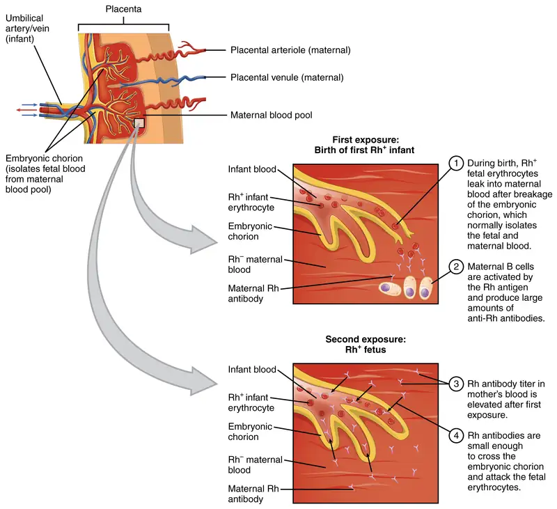
A drug known as RhoGAM, short for Rh immune globulin, can temporarily prevent the development of Rh antibodies in the Rh− parent, thereby averting this potentially serious disease for the fetus. RhoGAM antibodies destroy any fetal Rh+ erythrocytes that may cross the placental barrier. RhoGAM is normally administered to Rh− pregnant people during weeks 26−28 of pregnancy and within 72 hours following birth. It has proven remarkably effective in decreasing the incidence of HDN. Earlier we noted that the incidence of HDN in an Rh+ subsequent pregnancy to an Rh− person is about 13–14 percent without preventive treatment. Since the introduction of RhoGAM in 1968, the incidence has dropped to about 0.1 percent in the United States.
Determining ABO Blood Types¶
Clinicians are able to determine a patient’s blood type quickly and easily using commercially prepared antibodies. An unknown blood sample is allocated into separate wells. Into one well a small amount of anti-A antibody is added, and to another a small amount of anti-B antibody. If the antigen is present, the antibodies will cause visible agglutination of the cells (Figure 18.16). The blood should also be tested for Rh antibodies.
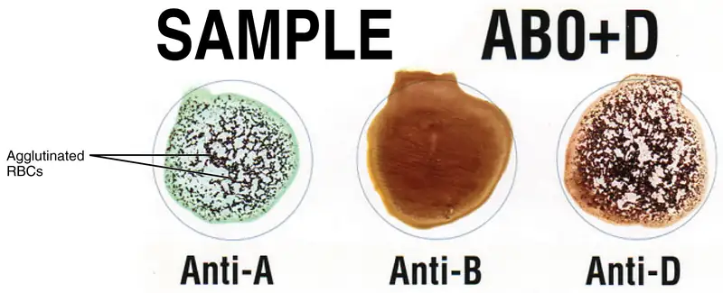
ABO Transfusion Protocols¶
To avoid transfusion reactions, it is best to transfuse only matching blood types; that is, a type B+ recipient should ideally receive blood only from a type B+ donor and so on. That said, in emergency situations, when acute hemorrhage threatens the patient’s life, there may not be time for cross matching to identify blood type. In these cases, blood from a universal donor—an individual with type O− blood—may be transfused. Recall that type O erythrocytes do not display A or B antigens. Thus, anti-A or anti-B antibodies that might be circulating in the patient’s blood plasma will not encounter any erythrocyte surface antigens on the donated blood and therefore will not be provoked into a response. One problem with this designation of universal donor is if the O− individual had prior exposure to Rh antigen, Rh antibodies may be present in the donated blood. Also, introducing type O blood into an individual with type A, B, or AB blood will nevertheless introduce antibodies against both A and B antigens, as these are always circulating in the type O blood plasma. This may cause problems for the recipient, but because the volume of blood transfused is much lower than the volume of the patient’s own blood, the adverse effects of the relatively few infused plasma antibodies are typically limited. Rh factor also plays a role. If Rh− individuals receiving blood have had prior exposure to Rh antigen, antibodies for this antigen may be present in the blood and trigger agglutination to some degree. Although it is always preferable to cross match a patient’s blood before transfusing, in a true life-threatening emergency situation, this is not always possible, and these procedures may be implemented.
A patient with blood type AB+ is known as the universal recipient. This patient can theoretically receive any type of blood, because the patient’s own blood—having both A and B antigens on the erythrocyte surface—does not produce anti-A or anti-B antibodies. In addition, an Rh+ patient can receive both Rh+ and Rh− blood. However, keep in mind that the donor’s blood will contain circulating antibodies, again with possible negative implications. Figure 18.17 summarizes the blood types and compatibilities.
At the scene of multiple-vehicle accidents, military engagements, and natural or human-caused disasters, many victims may suffer simultaneously from acute hemorrhage, yet type O blood may not be immediately available. In these circumstances, medics may at least try to replace some of the volume of blood that has been lost. This is done by intravenous administration of a saline solution that provides fluids and electrolytes in proportions equivalent to those of normal blood plasma. Research is ongoing to develop a safe and effective artificial blood that would carry out the oxygen-carrying function of blood without the RBCs, enabling transfusions in the field without concern for incompatibility. These blood substitutes normally contain hemoglobin- as well as perfluorocarbon-based oxygen carriers.
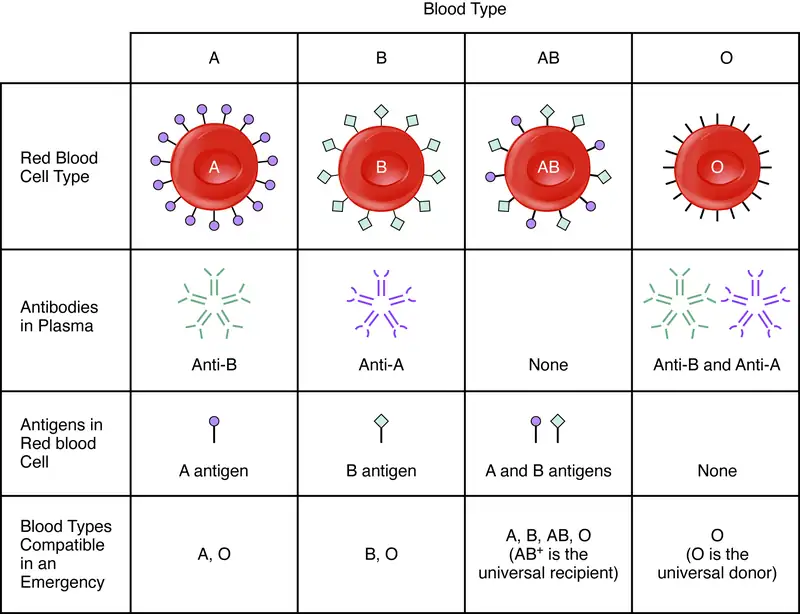
Chapter Review¶
Key Terms¶
- ABO blood group
- blood-type classification based on the presence or absence of A and B glycoproteins on the erythrocyte membrane surface
- agglutination
- clustering of cells into masses linked by antibodies
- agranular leukocytes
- leukocytes with few granules in their cytoplasm; specifically, monocytes, lymphocytes, and NK cells
- albumin
- most abundant plasma protein, accounting for most of the osmotic pressure of plasma
- anemia
- deficiency of red blood cells or hemoglobin
- antibodies
- (also, immunoglobulins or gamma globulins) antigen-specific proteins produced by specialized B lymphocytes that protect the body by binding to foreign objects such as bacteria and viruses
- anticoagulant
- substance such as heparin that opposes coagulation
- antithrombin
- anticoagulant that inactivates factor X and opposes the conversion of prothrombin (factor II) into thrombin in the common pathway
- B lymphocytes
- (also, B cells) lymphocytes that defend the body against specific pathogens and thereby provide specific immunity
- basophils
- granulocytes that stain with a basic (alkaline) stain and store histamine and heparin
- bilirubin
- yellowish bile pigment produced when iron is removed from heme and is further broken down into waste products
- biliverdin
- green bile pigment produced when the non-iron portion of heme is degraded into a waste product; converted to bilirubin in the liver
- blood
- liquid connective tissue composed of formed elements—erythrocytes, leukocytes, and platelets—and a fluid extracellular matrix called plasma; component of the cardiovascular system
- bone marrow biopsy
- diagnostic test of a sample of red bone marrow
- bone marrow transplant
- treatment in which a donor’s healthy bone marrow with its stem cells replaces diseased or damaged bone marrow of a patient
- bruise
- localized bleeding under the skin due to damaged blood vessels
- buffy coat
- thin, pale layer of leukocytes and platelets that separates the erythrocytes from the plasma in a sample of centrifuged blood
- carbaminohemoglobin
- compound of carbon dioxide and hemoglobin, and one of the ways in which carbon dioxide is carried in the blood
- clotting factors
- group of 12 identified substances active in coagulation
- coagulation
- formation of a blood clot; part of the process of hemostasis
- colony-stimulating factors (CSFs)
- glycoproteins that trigger the proliferation and differentiation of myeloblasts into granular leukocytes (basophils, neutrophils, and eosinophils)
- common pathway
- final coagulation pathway activated either by the intrinsic or the extrinsic pathway, and ending in the formation of a blood clot
- cross matching
- blood test for identification of blood type using antibodies and small samples of blood
- cytokines
- class of proteins that act as autocrine or paracrine signaling molecules; in the cardiovascular system, they stimulate the proliferation of progenitor cells and help to stimulate both nonspecific and specific resistance to disease
- defensins
- antimicrobial proteins released from neutrophils and macrophages that create openings in the plasma membranes to kill cells
- deoxyhemoglobin
- molecule of hemoglobin without an oxygen molecule bound to it
- diapedesis
- (also, emigration) process by which leukocytes squeeze through adjacent cells in a blood vessel wall to enter tissues
- embolus
- thrombus that has broken free from the blood vessel wall and entered the circulation
- emigration
- (also, diapedesis) process by which leukocytes squeeze through adjacent cells in a blood vessel wall to enter tissues
- eosinophils
- granulocytes that stain with eosin; they release antihistamines and are especially active against parasitic worms
- erythrocyte
- (also, red blood cell) mature myeloid blood cell that is composed mostly of hemoglobin and functions primarily in the transportation of oxygen and carbon dioxide
- erythropoietin (EPO)
- glycoprotein that triggers the bone marrow to produce RBCs; secreted by the kidney in response to low oxygen levels
- extrinsic pathway
- initial coagulation pathway that begins with tissue damage and results in the activation of the common pathway
- ferritin
- protein-containing storage form of iron found in the bone marrow, liver, and spleen
- fibrin
- insoluble, filamentous protein that forms the structure of a blood clot
- fibrinogen
- plasma protein produced in the liver and involved in blood clotting
- fibrinolysis
- gradual degradation of a blood clot
- formed elements
- cellular components of blood; that is, erythrocytes, leukocytes, and platelets
- globin
- heme-containing globular protein that is a constituent of hemoglobin
- globulins
- heterogeneous group of plasma proteins that includes transport proteins, clotting factors, immune proteins, and others
- granular leukocytes
- leukocytes with abundant granules in their cytoplasm; specifically, neutrophils, eosinophils, and basophils
- hematocrit
- (also, packed cell volume) volume percentage of erythrocytes in a sample of centrifuged blood
- hematopoietic stem cell
- type of pluripotent stem cell that gives rise to the formed elements of blood (hemocytoblast)
- heme
- red, iron-containing pigment to which oxygen binds in hemoglobin
- hemocytoblast
- hematopoietic stem cell that gives rise to the formed elements of blood
- hemoglobin
- oxygen-carrying compound in erythrocytes
- hemolysis
- destruction (lysis) of erythrocytes and the release of their hemoglobin into circulation
- hemolytic disease of the newborn (HDN)
- (also, erythroblastosis fetalis) disorder causing agglutination and hemolysis in an Rh+ fetus or newborn of an Rh− person
- hemophilia
- genetic disorder characterized by inadequate synthesis of clotting factors
- hemopoiesis
- production of the formed elements of blood
- hemopoietic growth factors
- chemical signals including erythropoietin, thrombopoietin, colony-stimulating factors, and interleukins that regulate the differentiation and proliferation of particular blood progenitor cells
- hemorrhage
- excessive bleeding
- hemosiderin
- protein-containing storage form of iron found in the bone marrow, liver, and spleen
- hemostasis
- physiological process by which bleeding ceases
- heparin
- short-acting anticoagulant stored in mast cells and released when tissues are injured, opposes prothrombin
- hypoxemia
- below-normal level of oxygen saturation of blood (typically <95 percent)
- immunoglobulins
- (also, antibodies or gamma globulins) antigen-specific proteins produced by specialized B lymphocytes that protect the body by binding to foreign objects such as bacteria and viruses
- interleukins
- signaling molecules that may function in hemopoiesis, inflammation, and specific immune responses
- intrinsic pathway
- initial coagulation pathway that begins with vascular damage or contact with foreign substances, and results in the activation of the common pathway
- jaundice
- yellowing of the skin or whites of the eyes due to excess bilirubin in the blood
- leukemia
- cancer involving leukocytes
- leukocyte
- (also, white blood cell) colorless, nucleated blood cell, the chief function of which is to protect the body from disease
- leukocytosis
- excessive leukocyte proliferation
- leukopenia
- below-normal production of leukocytes
- lymphocytes
- agranular leukocytes of the lymphoid stem cell line, many of which function in specific immunity
- lymphoid stem cells
- type of hematopoietic stem cells that gives rise to lymphocytes, including various T cells, B cells, and NK cells, all of which function in immunity
- lymphoma
- form of cancer in which masses of malignant T and/or B lymphocytes collect in lymph nodes, the spleen, the liver, and other tissues
- lysozyme
- digestive enzyme with bactericidal properties
- macrophage
- phagocytic cell of the myeloid lineage; a matured monocyte
- megakaryocyte
- bone marrow cell that produces platelets
- memory cell
- type of B or T lymphocyte that forms after exposure to a pathogen
- monocytes
- agranular leukocytes of the myeloid stem cell line that circulate in the bloodstream; tissue monocytes are macrophages
- myeloid stem cells
- type of hematopoietic stem cell that gives rise to some formed elements, including erythrocytes, megakaryocytes that produce platelets, and a myeloblast lineage that gives rise to monocytes and three forms of granular leukocytes (neutrophils, eosinophils, and basophils)
- natural killer (NK) cells
- cytotoxic lymphocytes capable of recognizing cells that do not express “self” proteins on their plasma membrane or that contain foreign or abnormal markers; provide generalized, nonspecific immunity
- neutrophils
- granulocytes that stain with a neutral dye and are the most numerous of the leukocytes; especially active against bacteria
- oxyhemoglobin
- molecule of hemoglobin to which oxygen is bound
- packed cell volume (PCV)
- (also, hematocrit) volume percentage of erythrocytes present in a sample of centrifuged blood
- plasma
- in blood, the liquid extracellular matrix composed mostly of water that circulates the formed elements and dissolved materials throughout the cardiovascular system
- plasmin
- blood protein active in fibrinolysis
- platelet plug
- accumulation and adhesion of platelets at the site of blood vessel injury
- platelets
- (also, thrombocytes) one of the formed elements of blood that consists of cell fragments broken off from megakaryocytes
- pluripotent stem cell
- stem cell that derives from totipotent stem cells and is capable of differentiating into many, but not all, cell types
- polycythemia
- elevated level of hemoglobin, whether adaptive or pathological
- polymorphonuclear
- having a lobed nucleus, as seen in some leukocytes
- positive chemotaxis
- process in which a cell is attracted to move in the direction of chemical stimuli
- red blood cells (RBCs)
- (also, erythrocytes) one of the formed elements of blood that transports oxygen
- reticulocyte
- immature erythrocyte that may still contain fragments of organelles
- Rh blood group
- blood-type classification based on the presence or absence of the antigen Rh on the erythrocyte membrane surface
- serum
- blood plasma that does not contain clotting factors
- sickle cell disease
- (also, sickle cell anemia) inherited blood disorder in which hemoglobin molecules are malformed, leading to the breakdown of RBCs that take on a characteristic sickle shape
- T lymphocytes
- (also, T cells) lymphocytes that provide cellular-level immunity by physically attacking foreign or diseased cells
- thalassemia
- inherited blood disorder in which maturation of RBCs does not proceed normally, leading to abnormal formation of hemoglobin and the destruction of RBCs
- thrombin
- enzyme essential for the final steps in formation of a fibrin clot
- thrombocytes
- platelets, one of the formed elements of blood that consists of cell fragments broken off from megakaryocytes
- thrombocytopenia
- condition in which there are too few platelets, resulting in abnormal bleeding (hemophilia)
- thrombocytosis
- condition in which there are too many platelets, resulting in abnormal clotting (thrombosis)
- thrombopoietin
- hormone secreted by the liver and kidneys that prompts the development of megakaryocytes into thrombocytes (platelets)
- thrombosis
- excessive clot formation
- thrombus
- aggregation of fibrin, platelets, and erythrocytes in an intact artery or vein
- tissue factor
- protein thromboplastin, which initiates the extrinsic pathway when released in response to tissue damage
- totipotent stem cell
- embryonic stem cell that is capable of differentiating into any and all cells of the body; enabling the full development of an organism
- transferrin
- plasma protein that binds reversibly to iron and distributes it throughout the body
- universal donor
- individual with type O− blood
- universal recipient
- individual with type AB+ blood
- vascular spasm
- initial step in hemostasis, in which the smooth muscle in the walls of the ruptured or damaged blood vessel contracts
- white blood cells (WBCs)
- (also, leukocytes) one of the formed elements of blood that provides defense against disease agents and foreign materials
Chapter Review¶
18.1 An Overview of Blood¶
Blood is a fluid connective tissue critical to the transportation of nutrients, gases, and wastes throughout the body; to defend the body against infection and other threats; and to the homeostatic regulation of pH, temperature, and other internal conditions. Blood is composed of formed elements—erythrocytes, leukocytes, and cell fragments called platelets—and a fluid extracellular matrix called plasma. More than 90 percent of plasma is water. The remainder is mostly plasma proteins—mainly albumin, globulins, and fibrinogen—and other dissolved solutes such as glucose, lipids, electrolytes, and dissolved gases. Because of the formed elements and the plasma proteins and other solutes, blood is sticky and more viscous than water. It is also slightly alkaline, and its temperature is slightly higher than normal body temperature.
18.2 Production of the Formed Elements¶
Through the process of hemopoiesis, the formed elements of blood are continually produced, replacing the relatively short-lived erythrocytes, leukocytes, and platelets. Hemopoiesis begins in the red bone marrow, with hematopoietic stem cells that differentiate into myeloid and lymphoid lineages. Myeloid stem cells give rise to most of the formed elements. Lymphoid stem cells give rise only to the various lymphocytes designated as B and T cells, and NK cells. Hemopoietic growth factors, including erythropoietin, thrombopoietin, colony-stimulating factors, and interleukins, promote the proliferation and differentiation of formed elements.
18.3 Erythrocytes¶
The most abundant formed elements in blood, erythrocytes are red, biconcave disks packed with an oxygen-carrying compound called hemoglobin. The hemoglobin molecule contains four globin proteins bound to a pigment molecule called heme, which contains an ion of iron. In the bloodstream, iron picks up oxygen in the lungs and drops it off in the tissues; the amino acids in hemoglobin then transport carbon dioxide from the tissues back to the lungs. Erythrocytes live only 120 days on average, and thus must be continually replaced. Worn-out erythrocytes are phagocytized by macrophages and their hemoglobin is broken down. The breakdown products are recycled or removed as wastes: Globin is broken down into amino acids for synthesis of new proteins; iron is stored in the liver or spleen or used by the bone marrow for production of new erythrocytes; and the remnants of heme are converted into bilirubin, or other waste products that are taken up by the liver and excreted in the bile or removed by the kidneys. Anemia is a deficiency of RBCs or hemoglobin, whereas polycythemia is an excess of RBCs.
18.4 Leukocytes and Platelets¶
Leukocytes function in body defenses. They squeeze out of the walls of blood vessels through emigration or diapedesis, then may move through tissue fluid or become attached to various organs where they fight against pathogenic organisms, diseased cells, or other threats to health. Granular leukocytes, which include neutrophils, eosinophils, and basophils, originate with myeloid stem cells, as do the agranular monocytes. The other agranular leukocytes, NK cells, B cells, and T cells, arise from the lymphoid stem cell line. The most abundant leukocytes are the neutrophils, which are first responders to infections, especially with bacteria. About 20–30 percent of all leukocytes are lymphocytes, which are critical to the body’s defense against specific threats. Leukemia and lymphoma are malignancies involving leukocytes. Platelets are fragments of cells known as megakaryocytes that dwell within the bone marrow. While many platelets are stored in the spleen, others enter the circulation and are essential for hemostasis; they also produce several growth factors important for repair and healing.
18.5 Hemostasis¶
Hemostasis is the physiological process by which bleeding ceases. Hemostasis involves three basic steps: vascular spasm, the formation of a platelet plug, and coagulation, in which clotting factors promote the formation of a fibrin clot. Fibrinolysis is the process in which a clot is degraded in a healing vessel. Anticoagulants are substances that oppose coagulation. They are important in limiting the extent and duration of clotting. Inadequate clotting can result from too few platelets, or inadequate production of clotting factors, for instance, in the genetic disorder hemophilia. Excessive clotting, called thrombosis, can be caused by excessive numbers of platelets. A thrombus is a collection of fibrin, platelets, and erythrocytes that has accumulated along the lining of a blood vessel, whereas an embolus is a thrombus that has broken free from the vessel wall and is circulating in the bloodstream.
18.6 Blood Typing¶
Antigens are nonself molecules, usually large proteins, which provoke an immune response. In transfusion reactions, antibodies attach to antigens on the surfaces of erythrocytes and cause agglutination and hemolysis. ABO blood group antigens are designated A and B. People with type A blood have A antigens on their erythrocytes, whereas those with type B blood have B antigens. Those with AB blood have both A and B antigens, and those with type O blood have neither A nor B antigens. The blood plasma contains preformed antibodies against the antigens not present on a person’s erythrocytes.
A second group of blood antigens is the Rh group, the most important of which is Rh D. People with Rh− blood do not have this antigen on their erythrocytes, whereas those who are Rh+ do. About 85 percent of Americans are Rh+. When a person who is Rh− becomes pregnant with an Rh+ fetus, their body may begin to produce anti-Rh antibodies. If the person subsequently becomes pregnant with a second Rh+ fetus and is not treated preventively with RhoGAM, the fetus will be at risk for an antigen-antibody reaction, including agglutination and hemolysis. This is known as hemolytic disease of the newborn.
Cross matching to determine blood type is necessary before transfusing blood, unless the patient is experiencing hemorrhage that is an immediate threat to life, in which case type O− blood may be transfused.
Interactive Link Questions¶
18.1 An Overview of Blood¶
1. Visit this site for a list of normal levels established for many of the substances found in a sample of blood. Serum, one of the specimen types included, refers to a sample of plasma after clotting factors have been removed. What types of measurements are given for levels of glucose in the blood?
Answer
There are values given for percent saturation, tension, and blood gas, and there are listings for different types of hemoglobin.
18.2 Production of the Formed Elements¶
2. Watch this video to see doctors discuss the dangers of blood doping in sports. What are the some potential side effects of blood doping?
Answer
Side effects can include heart disease, stroke, pulmonary embolism, and virus transmission.
18.4 Leukocytes and Platelets¶
3. Figure 18.13 Are you able to recognize and identify the various formed elements? You will need to do this is a systematic manner, scanning along the image. The standard method is to use a grid, but this is not possible with this resource. Try constructing a simple table with each leukocyte type and then making a mark for each cell type you identify. Attempt to classify at least 50 and perhaps as many as 100 different cells. Based on the percentage of cells that you count, do the numbers represent a normal blood smear or does something appear to be abnormal?
Answer
Figure 18.13 This should appear to be a normal blood smear.
18.5 Hemostasis¶
4. View these animations to explore the intrinsic, extrinsic, and common pathways that are involved the process of coagulation. The coagulation cascade restores hemostasis by activating coagulation factors in the presence of an injury.
Answer
Clotting factors flow through the blood vessels in their inactive state. The endothelium does not have thrombogenic tissue factor to activate clotting factors.
Review Questions¶
18.1 An Overview of Blood¶
5. Which of the following statements about blood is true?
- Blood is about 92 percent water.
- Blood is slightly more acidic than water.
- Blood is slightly more viscous than water.
- Blood is slightly more salty than seawater.
Answer
C
6. Which of the following statements about albumin is true?
- It draws water out of the blood vessels and into the body’s tissues.
- It is the most abundant plasma protein.
- It is produced by specialized leukocytes called plasma cells.
- All of the above are true.
Answer
B
7. Which of the following plasma proteins is not produced by the liver?
- fibrinogen
- alpha globulin
- beta globulin
- immunoglobulin
Answer
D
18.2 Production of the Formed Elements¶
8. Which of the formed elements arise from myeloid stem cells?
- B cells
- natural killer cells
- platelets
- all of the above
Answer
C
9. Which of the following statements about erythropoietin is true?
- It facilitates the proliferation and differentiation of the erythrocyte lineage.
- It is a hormone produced by the thyroid gland.
- It is a hemopoietic growth factor that prompts lymphoid stem cells to leave the bone marrow.
- Both a and b are true.
Answer
A
10. Interleukins are associated primarily with which of the following?
- production of various lymphocytes
- immune responses
- inflammation
- all of the above
Answer
D
18.3 Erythrocytes¶
11. Which of the following statements about mature, circulating erythrocytes is true?
- They have no nucleus.
- They are packed with mitochondria.
- They survive for an average of 4 days.
- All of the above
Answer
A
12. A molecule of hemoglobin ________.
- is shaped like a biconcave disk packed almost entirely with iron
- contains four glycoprotein units studded with oxygen
- consists of four globin proteins, each bound to a molecule of heme
- can carry up to 120 molecules of oxygen
Answer
C
13. The production of healthy erythrocytes depends upon the availability of ________.
- copper
- zinc
- vitamin B12
- copper, zinc, and vitamin B12
Answer
D
14. Aging and damaged erythrocytes are removed from the circulation by ________.
- myeoblasts
- monocytes
- macrophages
- mast cells
Answer
C
15. A patient has been suffering for 2 months with a chronic, watery diarrhea. A blood test is likely to reveal ________.
- a hematocrit below 30 percent
- hypoxemia
- anemia
- polycythemia
Answer
D
18.4 Leukocytes and Platelets¶
16. The process by which leukocytes squeeze through adjacent cells in a blood vessel wall is called ________.
- leukocytosis
- positive chemotaxis
- emigration
- cytoplasmic extending
Answer
C
17. Which of the following describes a neutrophil?
- abundant, agranular, especially effective against cancer cells
- abundant, granular, especially effective against bacteria
- rare, agranular, releases antimicrobial defensins
- rare, granular, contains multiple granules packed with histamine
Answer
B
18. T and B lymphocytes ________.
- are polymorphonuclear
- are involved with specific immune function
- proliferate excessively in leukopenia
- are most active against parasitic worms
Answer
B
19. A patient has been experiencing severe, persistent allergy symptoms that are reduced when she takes an antihistamine. Before the treatment, this patient was likely to have had increased activity of which leukocyte?
- basophils
- neutrophils
- monocytes
- natural killer cells
Answer
A
20. Thrombocytes are more accurately called ________.
- clotting factors
- megakaryoblasts
- megakaryocytes
- platelets
Answer
D
18.5 Hemostasis¶
21. The first step in hemostasis is ________.
- vascular spasm
- conversion of fibrinogen to fibrin
- activation of the intrinsic pathway
- activation of the common pathway
Answer
A
22. Prothrombin is converted to thrombin during the ________.
- intrinsic pathway
- extrinsic pathway
- common pathway
- formation of the platelet plug
Answer
C
23. Hemophilia is characterized by ________.
- inadequate production of heparin
- inadequate production of clotting factors
- excessive production of fibrinogen
- excessive production of platelets
Answer
B
18.6 Blood Typing¶
24. The process in which antibodies attach to antigens, causing the formation of masses of linked cells, is called ________.
- sensitization
- coagulation
- agglutination
- hemolysis
Answer
C
25. People with ABO blood type O ________.
- have both antigens A and B on their erythrocytes
- lack both antigens A and B on their erythrocytes
- have neither anti-A nor anti-B antibodies circulating in their blood plasma
- are considered universal recipients
Answer
B
26. Hemolytic disease of the newborn is a risk during a subsequent pregnancy in which ________.
- a type AB person is carrying a type O fetus
- a type O person is carrying a type AB fetus
- an Rh+ person is carrying an Rh− fetus
- an Rh− person is carrying a second Rh+ fetus
Answer
D
Critical Thinking Questions¶
18.1 An Overview of Blood¶
27. A patient’s hematocrit is 42 percent. Approximately what percentage of the patient’s blood is plasma?
Answer
The patient’s blood is approximately 58 percent plasma (since the buffy coat is less than 1 percent).
28. Why would it be incorrect to refer to the formed elements as cells?
Answer
The formed elements include erythrocytes and leukocytes, which are cells (although mature erythrocytes do not have a nucleus); however, the formed elements also include platelets, which are not true cells but cell fragments.
29. True or false: The buffy coat is the portion of a blood sample that is made up of its proteins.
Answer
False. The buffy coat is the portion of blood that is made up of its leukocytes and platelets.
18.2 Production of the Formed Elements¶
30. Myelofibrosis is a disorder in which inflammation and scar tissue formation in the bone marrow impair hemopoiesis. One sign is an enlarged spleen. Why?
Answer
When disease impairs the ability of the bone marrow to participate in hemopoiesis, extramedullary hemopoiesis begins in the patient’s liver and spleen. This causes the spleen to enlarge.
31. Would you expect a patient with a form of cancer called acute myelogenous leukemia to experience impaired production of erythrocytes, or impaired production of lymphocytes? Explain your choice.
Answer
The adjective myelogenous suggests a condition originating from (generated by) myeloid cells. Acute myelogenous leukemia impairs the production of erythrocytes and other mature formed elements of the myeloid stem cell lineage. Lymphocytes arise from the lymphoid stem cell line.
18.3 Erythrocytes¶
32. A young person has been experiencing unusually heavy menstrual bleeding for several years. They follow a strict vegan diet (no animal foods). They are is at risk for what disorder, and why?
Answer
They are at risk for anemia, because their unusually heavy menstrual bleeding results in excessive loss of erythrocytes each month. At the same time, their vegan diet means that they do not have dietary sources of heme iron. The non-heme iron they consume in plant foods is not as well absorbed as heme iron.
33. A patient has thalassemia, a genetic disorder characterized by abnormal synthesis of globin proteins and excessive destruction of erythrocytes. This patient is jaundiced and is found to have an excessive level of bilirubin in their blood. Explain the connection.
Answer
Bilirubin is a breakdown product of the non-iron component of heme, which is cleaved from globin when erythrocytes are degraded. Excessive erythrocyte destruction would deposit excessive bilirubin in the blood. Bilirubin is a yellowish pigment, and high blood levels can manifest as yellowed skin.
18.4 Leukocytes and Platelets¶
34. One of the more common adverse effects of cancer chemotherapy is the destruction of leukocytes. Before his next scheduled chemotherapy treatment, a patient undergoes a blood test called an absolute neutrophil count (ANC), which reveals that his neutrophil count is 1900 cells per microliter. Would his healthcare team be likely to proceed with his chemotherapy treatment? Why?
Answer
A neutrophil count below 1800 cells per microliter is considered abnormal. Thus, this patient’s ANC is at the low end of the normal range and there would be no reason to delay chemotherapy. In clinical practice, most patients are given chemotherapy if their ANC is above 1000.
35. A patient was admitted to the burn unit the previous evening suffering from a severe burn involving their left upper extremity and shoulder. A blood test reveals that they are experiencing leukocytosis. Why is this an expected finding?
Answer
Any severe stress can increase the leukocyte count, resulting in leukocytosis. A burn is especially likely to increase the proliferation of leukocytes in order to ward off infection, a significant risk when the barrier function of the skin is destroyed.
18.5 Hemostasis¶
36. A lab technician collects a blood sample in a glass tube. After about an hour, she harvests serum to continue her blood analysis. Explain what has happened during the hour that the sample was in the glass tube.
Answer
When blood contacts glass, the intrinsic coagulation pathway is initiated. This leads to the common pathway, and the blood clots. Within about 30 minutes, the clot begins to shrink. After an hour, it is about half its original size. Its heavier weight will cause it to fall to the bottom of the tube during centrifugation, allowing the lab technician to harvest the serum remaining at the top.
37. Explain why administration of a thrombolytic agent is a first intervention for someone who has suffered a thrombotic stroke.
Answer
In a thrombotic stroke, a blood vessel to the brain has been blocked by a thrombus, an aggregation of platelets and erythrocytes within a blood vessel. A thrombolytic agent is a medication that promotes the breakup of thrombi.
18.6 Blood Typing¶
38. Following a motor vehicle accident, a patient is rushed to the emergency department with multiple traumatic injuries, causing severe bleeding. The patient’s condition is critical, and there is no time for determining their blood type. What type of blood is transfused, and why?
Answer
In emergency situations, blood type O− will be infused until cross matching can be done. Blood type O− is called the universal donor blood because the erythrocytes have neither A nor B antigens on their surface, and the Rh factor is negative.
39. In preparation for a scheduled surgery, a patient visits the hospital lab for a blood draw. The technician collects a blood sample and performs a test to determine its type. She places a sample of the patient’s blood in two wells. To the first well she adds anti-A antibody. To the second she adds anti-B antibody. Both samples visibly agglutinate. Has the technician made an error, or is this a normal response? If normal, what blood type does this indicate?
Answer
The lab technician has not made an error. Blood type AB has both A and B surface antigens, and neither anti-A nor anti-B antibodies circulating in the plasma. When anti-A antibodies (added to the first well) contact A antigens on AB erythrocytes, they will cause agglutination. Similarly, when anti-B antibodies contact B antigens on AB erythrocytes, they will cause agglutination.
References¶
References
Garratty G, Glynn SA, McEntire R; Retrovirus Epidemiology Donor Study. ABO and Rh(D) phenotype frequencies of different racial/ethnic groups in the United States. Transfusion. Available from: https://pubmed.ncbi.nlm.nih.gov/15104651/https://pubmed.ncbi.nlm.nih.gov/15104651/
Adapted from Anatomy and Physiology 2e by OpenStax, licensed under CC BY 4.0. Access the original for free at openstax.org. Changes: converted to the web reading format of The Open Book Project.